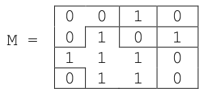
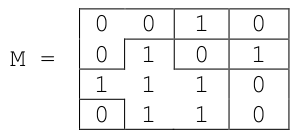
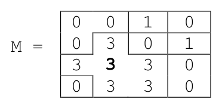
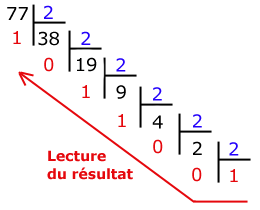

Épreuve Pratique BNS 2022⚓︎
 À lire
À lire
- Les sujets ci-dessous correspondent à la dernière version officielle, publiée le 24/02/2022.
- Certains sujets (ceux de l'année dernière reconduits cette année) ont parfois été légèrement modifiés par rapport à la version 2021. La correspondance des numérotations entre la BNS 2021 et la BNS 2022 peut se retrouver ici
- Certains de ces sujets comportent des erreurs, que j'ai corrigées ou non. Dans le doute, comparer avec la version originale du sujet.
- Les versions originales de ces sujets sont disponibles en pdf au début de chaque sujet. (pour télécharger les 40 sujets en un seul fichier, c'est ici)
- Si vous trouvez une erreur dans un énoncé ou une correction, merci m'envoyer un message à gilles.lassus[at]ac-bordeaux.fr.
 Pourquoi proposer une correction ?
Pourquoi proposer une correction ?
- La BNS est une banque de sujets publique, publiée bien en amont de l'Épreuve Pratique, afin que les futurs candidats puissent s'entraîner à la résolution des exercices.
- Pour que mes élèves puissent travailler en autonomie, une proposition de corrigé figure en regard de l'énoncé.
- Pour que d'autres puissent aussi travailler ces sujets et ces corrigés, éventuellement me signaler des erreurs, les corriger, et les partager à leur tour, ces corrections sont accessibles à tous.
▶ Sujet 01⚓︎
Version originale du sujet en pdf.
Exercice 01.1 □⚓︎
Exercice 01.1
Écrire une fonction recherche qui prend en paramètres caractere, un caractère, et
mot, une chaîne de caractères, et qui renvoie le nombre d’occurrences de caractere
dans mot, c’est-à-dire le nombre de fois où caractere apparaît dans mot.
Exemples :
>>> recherche('e', "sciences")
2
>>> recherche('i',"mississippi")
4
>>> recherche('a',"mississippi")
0
1 2 3 4 5 6 | |
Écrire une fonction `recherche` qui prend en paramètres `caractere`, un caractère, et
`mot`, une chaîne de caractères, et qui renvoie le nombre d’occurrences de `caractere`
dans `mot`, c’est-à-dire le nombre de fois où `caractere` apparaît dans `mot`.
Exemples :
```python
>>> recherche('e', "sciences")
2
>>> recherche('i',"mississippi")
4
>>> recherche('a',"mississippi")
0
```
Exercice 01.2 □⚓︎
Exercice 01.2
On s’intéresse à un algorithme récursif qui permet de rendre la monnaie à partir d’une liste donnée de valeurs de pièces et de billets.
Le système monétaire est donné sous
forme d’une liste pieces=[100, 50, 20, 10, 5, 2, 1].
(on supposera qu’il n’y a
pas de limitation quant à leur nombre).
On cherche à donner la liste de pièces à rendre
pour une somme donnée en argument.
Compléter le code Python ci-dessous de la fonction rendu_glouton qui implémente cet
algorithme et renvoie la liste des pièces à rendre.
1 2 3 4 5 6 7 8 9 10 11 | |
- Erreur dans l'énoncé officiel :
Pieces
On devra obtenir :
>>> rendu_glouton(68, [], 0)
[50, 10, 5, 2, 1]
>>> rendu_glouton(291, [], 0)
[100, 100, 50, 20, 20, 1]
1 2 3 4 5 6 7 8 9 10 11 | |
On s’intéresse à un algorithme récursif qui permet de rendre la monnaie à partir d’une
liste donnée de valeurs de pièces et de billets.
Le système monétaire est donné sous
forme d’une liste `pieces=[100, 50, 20, 10, 5, 2, 1]`.
(on supposera qu’il n’y a
pas de limitation quant à leur nombre).
On cherche à donner la liste de pièces à rendre
pour une somme donnée en argument.
Compléter le code Python ci-dessous de la fonction `rendu_glouton` qui implémente cet
algorithme et renvoie la liste des pièces à rendre.
```python linenums='1'
pieces = [100,50,20,10,5,2,1] # (1)
def rendu_glouton(arendre, solution=[], i=0):
if arendre == 0:
return ...
p = pieces[i]
if p <= ... :
solution.append(...)
return rendu_glouton(arendre - p, solution,i)
else :
return rendu_glouton(arendre, solution, ...)
- Erreur dans l'énoncé officiel :
Pieces
On devra obtenir :
>>> rendu_glouton(68, [], 0)
[50, 10, 5, 2, 1]
>>> rendu_glouton(291, [], 0)
[100, 100, 50, 20, 20, 1]
▶ Sujet 02⚓︎
Version originale du sujet en pdf.
Exercice 02.1 □⚓︎
Exercice 02.1
Soit le couple (note,coefficient):
noteest un nombre de type flottant (float) compris entre 0 et 20 ;coefficientest un nombre entier positif.
Les résultats aux évaluations d'un élève sont regroupés dans une liste composée de
couples (note,coefficient).
Écrire une fonction moyenne qui renvoie la moyenne pondérée de cette liste donnée en paramètre.
Par exemple, l’expression moyenne([(15,2),(9,1),(12,3)]) devra renvoyer le
résultat du calcul suivant :
\(\dfrac{2 \times 15 + 1 \times 9 + 3 \times 12 }{2+1+3}=12,5\)
1 2 3 4 5 6 7 8 9 | |
Soit le couple (`note`,`coefficient`):
- `note` est un nombre de type flottant (`float`) compris entre 0 et 20 ;
- `coefficient` est un nombre entier positif.
Les résultats aux évaluations d'un élève sont regroupés dans une liste composée de
couples (`note`,`coefficient`).
Écrire une fonction moyenne qui renvoie la moyenne pondérée de cette liste donnée en
paramètre.
Par exemple, l’expression `moyenne([(15,2),(9,1),(12,3)])` devra renvoyer le
résultat du calcul suivant :
$\dfrac{2 \times 15 + 1 \times 9 + 3 \times 12 }{2+1+3}=12,5$
Exercice 02.2 □⚓︎
Exercice 02.2
On cherche à déterminer les valeurs du triangle de Pascal. Dans ce tableau de forme triangulaire, chaque ligne commence et se termine par le nombre 1. Par ailleurs, la valeur qui occupe une case située à l’intérieur du tableau s’obtient en ajoutant les valeurs des deux cases situées juste au-dessus, comme l’indique la figure suivante :

Compléter la fonction pascal ci-après. Elle doit renvoyer une liste correspondant au
triangle de Pascal de la ligne 1 à la ligne n où n est un nombre entier supérieur ou égal à
2 (le tableau sera contenu dans la variable C). La variable Ck doit, quant à elle, contenir,
à l’étape numéro k, la k-ième ligne du tableau.
1 2 3 4 5 6 7 8 9 | |
Pour n = 4, voici ce qu'on devra obtenir :
>>> pascal(4)
[[1], [1, 1], [1, 2, 1], [1, 3, 3, 1], [1, 4, 6, 4, 1]]
n = 5, voici ce qu'on devra obtenir :
>>> pascal(5)
[[1], [1, 1], [1, 2, 1], [1, 3, 3, 1], [1, 4, 6, 4, 1], [1, 5, 10, 10, 5, 1]]
1 2 3 4 5 6 7 8 9 | |
On cherche à déterminer les valeurs du triangle de Pascal. Dans ce tableau de forme
triangulaire, chaque ligne commence et se termine par le nombre 1. Par ailleurs, la valeur
qui occupe une case située à l’intérieur du tableau s’obtient en ajoutant les valeurs des
deux cases situées juste au-dessus, comme l’indique la figure suivante :
{: .center width=60%}
Compléter la fonction `pascal` ci-après. Elle doit renvoyer une liste correspondant au
triangle de Pascal de la ligne `1` à la ligne `n` où `n` est un nombre entier supérieur ou égal à
`2` (le tableau sera contenu dans la variable `C`). La variable `Ck` doit, quant à elle, contenir,
à l’étape numéro `k`, la `k`-ième ligne du tableau.
```python linenums='1'
def pascal(n):
C= [[1]]
for k in range(1,...):
Ck = [...]
for i in range(1,k):
Ck.append(C[...][i-1]+C[...][...] )
Ck.append(...)
C.append(Ck)
return C
Pour n = 4, voici ce qu'on devra obtenir :
>>> pascal(4)
[[1], [1, 1], [1, 2, 1], [1, 3, 3, 1], [1, 4, 6, 4, 1]]
n = 5, voici ce qu'on devra obtenir :
>>> pascal(5)
[[1], [1, 1], [1, 2, 1], [1, 3, 3, 1], [1, 4, 6, 4, 1], [1, 5, 10, 10, 5, 1]]
▶ Sujet 03⚓︎
Version originale du sujet en pdf.
Exercice 03.1 □⚓︎
Exercice 03.1
Le codage par différence (delta encoding en anglais) permet de compresser un tableau de données en indiquant pour chaque donnée, sa différence avec la précédente (plutôt que la donnée elle-même). On se retrouve alors avec un tableau de données assez petites nécessitant moins de place en mémoire. Cette méthode se révèle efficace lorsque les valeurs consécutives sont proches.
Programmer la fonction delta qui prend en paramètre un tableau non vide de nombres entiers
et qui renvoie un tableau contenant les valeurs entières compressées à l’aide cette technique.
Exemples :
>>> delta([1000, 800, 802, 1000, 1003])
[1000, -200, 2, 198, 3]
>>> delta([42])
[42]
1 2 3 4 5 | |
Le codage par différence (delta encoding en anglais) permet de compresser un tableau de
données en indiquant pour chaque donnée, sa différence avec la précédente (plutôt que la
donnée elle-même). On se retrouve alors avec un tableau de données assez petites nécessitant
moins de place en mémoire. Cette méthode se révèle efficace lorsque les valeurs consécutives
sont proches.
Programmer la fonction `delta` qui prend en paramètre un tableau non vide de nombres entiers
et qui renvoie un tableau contenant les valeurs entières compressées à l’aide cette technique.
Exemples :
```python
>>> delta([1000, 800, 802, 1000, 1003])
[1000, -200, 2, 198, 3]
>>> delta([42])
[42]
```
Exercice 03.2 □⚓︎
Exercice 03.2
Une expression arithmétique ne comportant que les quatre opérations +, −,×,÷ peut être représentée sous forme d’arbre binaire. Les nœuds internes sont des opérateurs et les feuilles sont des nombres. Dans un tel arbre, la disposition des nœuds joue le rôle des parenthèses que nous connaissons bien.

En parcourant en profondeur infixe l’arbre binaire ci-dessus, on retrouve l’expression notée habituellement :
La classe Noeud ci-après permet d’implémenter une structure
d’arbre binaire.
Compléter la fonction récursive expression_infixe qui prend
en paramètre un objet de la classe Noeud et qui renvoie
l’expression arithmétique représentée par l’arbre binaire passé
en paramètre, sous forme d’une chaîne de caractères contenant
des parenthèses.
Résultat attendu avec l’arbre ci-dessus :
>>> e = Noeud(Noeud(Noeud(None, 3, None), '*', Noeud(Noeud(None, 8, None),
'+', Noeud(None, 7, None))), '-', Noeud(Noeud(None, 2, None), '+',
Noeud(None, 1, None)))
>>> expression_infixe(e)
'((3*(8+7))-(2+1))'
1 2 3 4 5 6 7 8 9 10 11 12 13 14 15 16 17 18 19 20 21 22 23 24 25 | |
- Attention, l'énoncé original fait précéder ce
returnd'unif ...qui a été supprimé ici. Il faudrait écrireif True:, ce qui est inutile...
1 2 3 4 5 6 7 8 9 10 11 12 13 14 15 16 17 18 19 20 21 22 23 24 25 26 27 28 29 | |
Une expression arithmétique ne comportant que les quatre opérations +, −,×,÷ peut être
représentée sous forme d’arbre binaire. Les nœuds internes sont des opérateurs et les feuilles
sont des nombres. Dans un tel arbre, la disposition des nœuds joue le rôle des parenthèses que
nous connaissons bien.
{: .center width=30%}
En parcourant en profondeur infixe l’arbre binaire ci-dessus, on
retrouve l’expression notée habituellement :
$$3 \times (8 + 7) − (2 + 1)$$
La classe `Noeud` ci-après permet d’implémenter une structure
d’arbre binaire.
Compléter la fonction récursive `expression_infixe` qui prend
en paramètre un objet de la classe `Noeud` et qui renvoie
l’expression arithmétique représentée par l’arbre binaire passé
en paramètre, sous forme d’une chaîne de caractères contenant
des parenthèses.
Résultat attendu avec l’arbre ci-dessus :
```python
>>> e = Noeud(Noeud(Noeud(None, 3, None), '*', Noeud(Noeud(None, 8, None),
'+', Noeud(None, 7, None))), '-', Noeud(Noeud(None, 2, None), '+',
Noeud(None, 1, None)))
>>> expression_infixe(e)
'((3*(8+7))-(2+1))'
1 2 3 4 5 6 7 8 9 10 11 12 13 14 15 16 17 18 19 20 21 22 23 24 25 | |
- Attention, l'énoncé original fait précéder ce
returnd'unif ...qui a été supprimé ici. Il faudrait écrireif True:, ce qui est inutile...
```
▶ Sujet 04⚓︎
Version originale du sujet en pdf.
Exercice 04.1 □⚓︎
Exercice 04.1
Écrire une fonction recherche qui prend en paramètre un tableau de nombres entiers
tab, et qui renvoie la liste (éventuellement vide) des couples d'entiers consécutifs
successifs qu'il peut y avoir dans tab.
Exemples :
>>> recherche([1, 4, 3, 5])
[]
>>> recherche([1, 4, 5, 3])
[(4, 5)]
>>> recherche([7, 1, 2, 5, 3, 4])
[(1, 2), (3, 4)]
>>> recherche([5, 1, 2, 3, 8, -5, -4, 7])
[(1, 2), (2, 3), (-5, -4)]
1 2 3 4 5 6 | |
Écrire une fonction `recherche` qui prend en paramètre un tableau de nombres entiers
`tab`, et qui renvoie la liste (éventuellement vide) des couples d'entiers consécutifs
successifs qu'il peut y avoir dans `tab`.
Exemples :
```python
>>> recherche([1, 4, 3, 5])
[]
>>> recherche([1, 4, 5, 3])
[(4, 5)]
>>> recherche([7, 1, 2, 5, 3, 4])
[(1, 2), (3, 4)]
>>> recherche([5, 1, 2, 3, 8, -5, -4, 7])
[(1, 2), (2, 3), (-5, -4)]
```
Exercice 04.2 □⚓︎
Exercice 04.2
Soit une image binaire représentée dans un tableau à 2 dimensions. Les éléments
M[i][j], appelés pixels, sont égaux soit à 0 soit à 1.
Une composante d’une image est un sous-ensemble de l’image constitué uniquement de
1 et de 0 qui sont côte à côte, soit horizontalement soit verticalement.
Par exemple, les composantes de
 sont

sont

On souhaite, à partir d’un pixel égal à 1 dans une image M, donner la valeur val à tous
les pixels de la composante à laquelle appartient ce pixel.
La fonction propager prend pour paramètre une image M, deux entiers i et j et une
valeur entière val. Elle met à la valeur val tous les pixels de la composante du pixel
M[i][j] s’il vaut 1 et ne fait rien s’il vaut 0.
Par exemple, propager(M,2,1,3) donne

Compléter le code récursif de la fonction propager donné ci-dessous :
1 2 3 4 5 6 7 8 9 10 11 12 13 14 15 16 17 18 19 20 21 | |
- Dans l'énoncé original, il n'y a rien après le
return. - Il faudrait écrire
len(M[0])plutôt quelen(M). (équivalent ici car l'image est carrée...)
Exemple :
>>> M = [[0,0,1,0],[0,1,0,1],[1,1,1,0],[0,1,1,0]]
>>> propager(M,2,1,3)
>>> M
[[0, 0, 1, 0], [0, 3, 0, 1], [3, 3, 3, 0], [0, 3, 3, 0]]
1 2 3 4 5 6 7 8 9 10 11 12 13 14 15 16 17 18 19 20 21 | |
Soit une image binaire représentée dans un tableau à 2 dimensions. Les éléments
`M[i][j]`, appelés pixels, sont égaux soit à `0` soit à `1`.
Une composante d’une image est un sous-ensemble de l’image constitué uniquement de
`1` et de `0` qui sont côte à côte, soit horizontalement soit verticalement.
Par exemple, les composantes de
{: .center width=30%}
sont
{: .center width=30%}
On souhaite, à partir d’un pixel égal à `1` dans une image `M`, donner la valeur `val` à tous
les pixels de la composante à laquelle appartient ce pixel.
La fonction `propager` prend pour paramètre une image `M`, deux entiers `i` et `j` et une
valeur entière `val`. Elle met à la valeur `val` tous les pixels de la composante du pixel
`M[i][j]` s’il vaut `1` et ne fait rien s’il vaut `0`.
Par exemple, `propager(M,2,1,3)` donne
{: .center width=30%}
Compléter le code récursif de la fonction `propager` donné ci-dessous :
```python linenums='1'
def propager(M, i, j, val):
if M[i][j]== ...:
return None # (1)
M[i][j] = val
# l'élément en haut fait partie de la composante
if ((i-1) >= 0 and M[i-1][j] == ...):
propager(M, i-1, j, val)
# l'élément en bas fait partie de la composante
if ((...) < len(M) and M[i+1][j] == 1):
propager(M, ..., j, val)
# l'élément à gauche fait partie de la composante
if ((...) >= 0 and M[i][j-1] == 1):
propager(M, i, ..., val)
# l'élément à droite fait partie de la composante
if ((...) < len(M) and M[i][j+1] == 1): # (2)
propager(M, i, ..., val)
- Dans l'énoncé original, il n'y a rien après le
return. - Il faudrait écrire
len(M[0])plutôt quelen(M). (équivalent ici car l'image est carrée...)
Exemple :
>>> M = [[0,0,1,0],[0,1,0,1],[1,1,1,0],[0,1,1,0]]
>>> propager(M,2,1,3)
>>> M
[[0, 0, 1, 0], [0, 3, 0, 1], [3, 3, 3, 0], [0, 3, 3, 0]]
▶ Sujet 05⚓︎
Version originale du sujet en pdf.
Exercice 05.1 □⚓︎
Exercice 05.1
Écrire une fonction rechercheMinMax qui prend en paramètre un tableau de nombres
non triés tab, et qui renvoie la plus petite et la plus grande valeur du tableau sous la
forme d’un dictionnaire à deux clés ‘min’ et ‘max’. Les tableaux seront représentés sous
forme de liste Python.
Exemples :
>>> tableau = [0, 1, 4, 2, -2, 9, 3, 1, 7, 1]
>>> resultat = rechercheMinMax(tableau)
>>> resultat
{'min': -2, 'max': 9}
>>> tableau = []
>>> resultat = rechercheMinMax(tableau)
>>> resultat
{'min': None, 'max': None}
1 2 3 4 5 6 7 8 9 10 11 12 | |
Écrire une fonction `rechercheMinMax` qui prend en paramètre un tableau de nombres
non triés `tab`, et qui renvoie la plus petite et la plus grande valeur du tableau sous la
forme d’un dictionnaire à deux clés ‘min’ et ‘max’. Les tableaux seront représentés sous
forme de liste Python.
Exemples :
```python
>>> tableau = [0, 1, 4, 2, -2, 9, 3, 1, 7, 1]
>>> resultat = rechercheMinMax(tableau)
>>> resultat
{'min': -2, 'max': 9}
>>> tableau = []
>>> resultat = rechercheMinMax(tableau)
>>> resultat
{'min': None, 'max': None}
```
Exercice 05.2 □⚓︎
Exercice 05.2
On dispose d’un programme permettant de créer un objet de type PaquetDeCarte,
selon les éléments indiqués dans le code ci-dessous.
Compléter ce code aux endroits indiqués par #A compléter, puis ajouter des
assertions dans l’initialiseur de Carte, ainsi que dans la méthode getCarteAt().
1 2 3 4 5 6 7 8 9 10 11 12 13 14 15 16 17 18 19 20 21 22 23 24 25 26 27 28 29 30 31 32 33 34 35 36 | |
>>> unPaquet = PaquetDeCarte()
>>> unPaquet.remplir()
>>> uneCarte = unPaquet.getCarteAt(20)
>>> print(uneCarte.getNom() + " de " + uneCarte.getCouleur())
8 de coeur
Attention, le code proposé ne respecte pas les standards de notation :
- il ne faut pas de majuscules sur les noms des attributs
- la docstring se place à l'intérieur de la fonction et non au dessus.
1 2 3 4 5 6 7 8 9 10 11 12 13 14 15 16 17 18 19 20 21 22 23 24 25 26 27 28 29 30 31 32 33 34 35 36 37 38 | |
On dispose d’un programme permettant de créer un objet de type `PaquetDeCarte`,
selon les éléments indiqués dans le code ci-dessous.
Compléter ce code aux endroits indiqués par `#A compléter`, puis ajouter des
assertions dans l’initialiseur de `Carte`, ainsi que dans la méthode `getCarteAt()`.
```python linenums='1'
class Carte:
"""Initialise Couleur (entre 1 a 4), et Valeur (entre 1 a 13)"""
def __init__(self, c, v):
self.Couleur = c
self.Valeur = v
"""Renvoie le nom de la Carte As, 2, ... 10,
Valet, Dame, Roi"""
def getNom(self):
if ( self.Valeur > 1 and self.Valeur < 11):
return str( self.Valeur)
elif self.Valeur == 11:
return "Valet"
elif self.Valeur == 12:
return "Dame"
elif self.Valeur == 13:
return "Roi"
else:
return "As"
"""Renvoie la couleur de la Carte (parmi pique, coeur, carreau, trefle"""
def getCouleur(self):
return ['pique', 'coeur', 'carreau', 'trefle' ][self.Couleur - 1]
class PaquetDeCarte:
def __init__(self):
self.contenu = []
"""Remplit le paquet de cartes"""
def remplir(self):
??? = [ ??? for couleur in range(1, ???) for valeur in range( 1, ???)]
"""Renvoie la Carte qui se trouve a la position donnee"""
def getCarteAt(self, pos):
if 0 <= pos < ??? :
return ???
>>> unPaquet = PaquetDeCarte()
>>> unPaquet.remplir()
>>> uneCarte = unPaquet.getCarteAt(20)
>>> print(uneCarte.getNom() + " de " + uneCarte.getCouleur())
8 de coeur
▶ Sujet 06⚓︎
Version originale du sujet en pdf.
Exercice 06.1 □⚓︎
Exercice 06.1
Écrire une fonction maxi qui prend en paramètre une liste tab de nombres entiers et renvoie un couple donnant le plus grand élément de cette liste, ainsi que l’indice de la première apparition de ce maximum dans la liste.
Exemple :
>>> maxi([1,5,6,9,1,2,3,7,9,8])
(9,3)
1 2 3 4 5 6 7 8 | |
Écrire une fonction `maxi` qui prend en paramètre une liste `tab` de nombres entiers et renvoie un couple donnant le plus grand élément de cette liste, ainsi que l’indice de la première apparition de ce maximum dans la liste.
Exemple :
```python
>>> maxi([1,5,6,9,1,2,3,7,9,8])
(9,3)
```
Exercice 06.2 □⚓︎
Exercice 06.2
La fonction recherche prend en paramètres deux chaines de caractères gene et
seq_adn et renvoie True si on retrouve gene dans seq_adn et False sinon.
Compléter le code Python ci-dessous pour qu’il implémente la fonction recherche.
1 2 3 4 5 6 7 8 9 10 11 12 13 | |
Exemples :
>>> recherche("AATC", "GTACAAATCTTGCC")
True
>>> recherche("AGTC", "GTACAAATCTTGCC")
False
1 2 3 4 5 6 7 8 9 10 11 12 13 | |
La fonction `recherche` prend en paramètres deux chaines de caractères `gene` et
`seq_adn` et renvoie `True` si on retrouve `gene` dans `seq_adn` et `False` sinon.
Compléter le code Python ci-dessous pour qu’il implémente la fonction `recherche`.
```python linenums='1'
def recherche(gene, seq_adn):
n = len(seq_adn)
g = len(gene)
i = ...
trouve = False
while i < ... and trouve == ... :
j = 0
while j < g and gene[j] == seq_adn[i+j]:
...
if j == g:
trouve = True
...
return trouve
Exemples :
>>> recherche("AATC", "GTACAAATCTTGCC")
True
>>> recherche("AGTC", "GTACAAATCTTGCC")
False
▶ Sujet 07⚓︎
Version originale du sujet en pdf.
Exercice 07.1 □⚓︎
Exercice 07.1
Écrire une fonction conv_bin qui prend en paramètre un entier positif n et renvoie un
couple (b,bit) où :
best une liste d'entiers correspondant à la représentation binaire den;bitcorrespond aux nombre de bits qui constituentb.
Exemple :
>>> conv_bin(9)
([1,0,0,1],4)
Aide :
- l'opérateur
//donne le quotient de la division euclidienne :5//2donne2; - l'opérateur
%donne le reste de la division euclidienne :5%2donne1; appendest une méthode qui ajoute un élément à une liste existante : SoitT=[5,2,4], alorsT.append(10)ajoute10à la listeT. Ainsi,Tdevient[5,2,4,10].reverseest une méthode qui renverse les éléments d'une liste. SoitT=[5,2,4,10]. AprèsT.reverse(), la liste devient[10,4,2,5].
On remarquera qu’on récupère la représentation binaire d’un entier n en partant de la gauche en appliquant successivement les instructions :
b = n%2
n = n//2
répétées autant que nécessaire.
1 2 3 4 5 6 7 8 9 10 11 12 13 | |
Écrire une fonction `conv_bin` qui prend en paramètre un entier positif `n` et renvoie un
couple (`b,bit)` où :
- `b` est une liste d'entiers correspondant à la représentation binaire de `n`;
- `bit` correspond aux nombre de bits qui constituent `b`.
Exemple :
```python
>>> conv_bin(9)
([1,0,0,1],4)
```
Aide :
- l'opérateur `//` donne le quotient de la division euclidienne : `5//2` donne `2` ;
- l'opérateur `%` donne le reste de la division euclidienne :` 5%2` donne `1` ;
- `append` est une méthode qui ajoute un élément à une liste existante :
Soit `T=[5,2,4]`, alors `T.append(10)` ajoute `10` à la liste `T`. Ainsi, `T` devient
`[5,2,4,10]`.
- `reverse` est une méthode qui renverse les éléments d'une liste.
Soit `T=[5,2,4,10]`. Après `T.reverse()`, la liste devient `[10,4,2,5]`.
On remarquera qu’on récupère la représentation binaire d’un entier `n` en partant de la gauche en appliquant successivement les instructions :
`b = n%2`
`n = n//2`
répétées autant que nécessaire.
Exercice 07.2 □⚓︎
Exercice 07.2
La fonction tri_bulles prend en paramètre une liste T d’entiers non triés et renvoie la liste triée par ordre croissant.
Compléter le code Python ci-dessous qui implémente la fonction tri_bulles.
1 2 3 4 5 6 7 8 9 | |
1 2 3 4 5 6 7 8 9 | |
La fonction `tri_bulles` prend en paramètre une liste `T` d’entiers non triés et renvoie la liste triée par ordre croissant.
Compléter le code Python ci-dessous qui implémente la fonction `tri_bulles`.
```python linenums='1'
def tri_bulles(T):
n = len(T)
for i in range(...,...,-1):
for j in range(i):
if T[j] > T[...]:
... = T[j]
T[j] = T[...]
T[j+1] = temp
return T
▶ Sujet 08⚓︎
Version originale du sujet en pdf.
Exercice 08.1 □⚓︎
Exercice 08.1
Écrire une fonction recherche qui prend en paramètres elt un nombre entier et tab
un tableau de nombres entiers, et qui renvoie l’indice de la première occurrence de elt
dans tab si elt est dans tab et -1 sinon.
Exemples :
>>> recherche(1, [2, 3, 4])
-1
>>> recherche(1, [10, 12, 1, 56])
2
>>> recherche(50, [1, 50, 1])
1
>>> recherche(15, [8, 9, 10, 15])
3
1 2 3 4 5 | |
Écrire une fonction `recherche` qui prend en paramètres `elt` un nombre entier et `tab`
un tableau de nombres entiers, et qui renvoie l’indice de la première occurrence de `elt`
dans `tab` si `elt` est dans `tab` et `-1` sinon.
Exemples :
```python
>>> recherche(1, [2, 3, 4])
-1
>>> recherche(1, [10, 12, 1, 56])
2
>>> recherche(50, [1, 50, 1])
1
>>> recherche(15, [8, 9, 10, 15])
3
```
Exercice 08.2 □⚓︎
Exercice 08.2
On considère la fonction insere ci-dessous qui prend en argument un entier a et un
tableau tab d'entiers triés par ordre croissant. Cette fonction insère la valeur a dans le
tableau et renvoie le nouveau tableau. Les tableaux seront représentés sous la forme de
listes python.
1 2 3 4 5 6 7 8 9 | |
Compléter la fonction insere ci-dessus.
Exemples :
>>> insere(3,[1,2,4,5])
[1, 2, 3, 4, 5]
>>> insere(10,[1,2,7,12,14,25])
[1, 2, 7, 10, 12, 14, 25]
>>> insere(1,[2,3,4])
[1, 2, 3, 4]
1 2 3 4 5 6 7 8 9 | |
On considère la fonction `insere` ci-dessous qui prend en argument un entier `a` et un
tableau `tab` d'entiers triés par ordre croissant. Cette fonction insère la valeur `a` dans le
tableau et renvoie le nouveau tableau. Les tableaux seront représentés sous la forme de
listes python.
```python linenums='1'
def insere(a, tab):
l = list(tab) #l contient les mêmes éléments que tab
l.append(a)
i = ...
while a < ... and i >= 0:
l[i+1] = ...
l[i] = a
i = ...
return l
Compléter la fonction insere ci-dessus.
Exemples :
>>> insere(3,[1,2,4,5])
[1, 2, 3, 4, 5]
>>> insere(10,[1,2,7,12,14,25])
[1, 2, 7, 10, 12, 14, 25]
>>> insere(1,[2,3,4])
[1, 2, 3, 4]
▶ Sujet 09⚓︎
Version originale du sujet en pdf.
Exercice 09.1 □⚓︎
Exercice 09.1
Soit un nombre entier supérieur ou égal à 1 :
- s'il est pair, on le divise par 2 ;
- s’il est impair, on le multiplie par 3 et on ajoute 1.
Puis on recommence ces étapes avec le nombre entier obtenu, jusqu’à ce que l’on obtienne la valeur 1.
On définit ainsi la suite \((U_n)\) par :
- \(U_0=k\), où \(k\) est un entier choisi initialement;
- \(U_{n+1} = \dfrac{U_n}{2}\) si \(U_n\) est pair;
- \(U_{n+1} = 3 \times U_n + 1\) si \(U_n\) est impair.
On admet que, quel que soit l'entier k choisi au départ, la suite finit toujours sur la valeur 1.
Écrire une fonction calcul prenant en paramètres un entier k strictement positif et qui renvoie la liste des valeurs de la suite, en partant de k et jusqu'à atteindre 1.
Exemple :
>>> calcul(7)
[7, 22, 11, 34, 17, 52, 26, 13, 40, 20, 10, 5, 16, 8, 4, 2, 1]
1 2 3 4 5 6 7 8 9 10 11 | |
Soit un nombre entier supérieur ou égal à 1 :
- s'il est pair, on le divise par 2 ;
- s’il est impair, on le multiplie par 3 et on ajoute 1.
Puis on recommence ces étapes avec le nombre entier obtenu, jusqu’à ce que l’on
obtienne la valeur 1.
On définit ainsi la suite $(U_n)$ par :
- $U_0=k$, où $k$ est un entier choisi initialement;
- $U_{n+1} = \dfrac{U_n}{2}$ si $U_n$ est pair;
- $U_{n+1} = 3 \times U_n + 1$ si $U_n$ est impair.
**On admet que, quel que soit l'entier ```k``` choisi au départ, la suite finit toujours sur la valeur 1.**
Écrire une fonction ```calcul``` prenant en paramètres un entier ```k``` strictement positif et qui renvoie la liste des valeurs de la suite, en partant de ```k``` et jusqu'à atteindre 1.
Exemple :
```python
>>> calcul(7)
[7, 22, 11, 34, 17, 52, 26, 13, 40, 20, 10, 5, 16, 8, 4, 2, 1]
```
Exercice 09.2 □⚓︎
Exercice 09.2
On affecte à chaque lettre de l'alphabet un code selon le tableau ci-dessous :
| A | B | C | D | E | F | G | H | I | J | K | L | M | N | O | P | Q | R | S | T | U | V | W | X | Y | Z |
|---|---|---|---|---|---|---|---|---|---|---|---|---|---|---|---|---|---|---|---|---|---|---|---|---|---|
| 1 | 2 | 3 | 4 | 5 | 6 | 7 | 8 | 9 | 10 | 11 | 12 | 13 | 14 | 15 | 16 | 17 | 18 | 19 | 20 | 21 | 22 | 23 | 24 | 25 | 26 |
Pour un mot donné, on détermine d’une part son code alphabétique concaténé, obtenu par la juxtaposition des codes de chacun de ses caractères, et d’autre part, son code additionné, qui est la somme des codes de chacun de ses caractères.
Par ailleurs, on dit que ce mot est « parfait » si le code additionné divise le code concaténé.
Exemples :
-
Pour le mot
"PAUL", le code concaténé est la chaîne'1612112', soit l’entier 1 612 112. Son code additionné est l’entier 50 car 16 + 1 + 21 + 12 = 50. 50 ne divise pas l’entier 1 612 112 ; par conséquent, le mot"PAUL"n’est pas parfait. -
Pour le mot
"ALAIN", le code concaténé est la chaîne'1121914', soit l’entier 1 121 914. Le code additionné est l’entier 37 car 1 + 12 + 1 + 9 + 14 = 37. 37 divise l’entier 1 121 914 ; par conséquent, le mot"ALAIN"est parfait.
Compléter la fonction est_parfait ci-dessous qui prend comme argument une chaîne
de caractères mot (en lettres majuscules) et qui renvoie le code alphabétique concaténé,
le code additionné de mot, ainsi qu’un booléen qui indique si mot est parfait ou pas.
1 2 3 4 5 6 7 8 9 10 11 12 13 14 15 16 17 18 | |
Exemples :
>>> est_parfait("PAUL")
[50, 1612112, False]
>>> est_parfait("ALAIN")
[37, 1121914, True]
1 2 3 4 5 6 7 8 9 10 11 12 13 14 15 16 17 18 | |
On affecte à chaque lettre de l'alphabet un code selon le tableau ci-dessous :
| A | B | C | D | E | F | G | H | I | J | K | L | M | N | O | P | Q | R | S | T | U | V | W | X | Y | Z |
|:-:|:-:|:-:|:-:|:-:|:-:|:-:|:-:|:-:|:-:|:-:|:-:|:-:|:-:|:-:|:-:|:-:|:-:|:-:|:-:|:-:|:-:|:-:|:-:|:-:|:-:|
| 1 | 2 | 3 | 4 | 5 | 6 | 7 | 8 | 9 | 10 | 11 | 12 | 13 | 14 | 15 | 16 | 17 | 18 | 19 | 20 | 21 | 22 | 23 | 24 | 25 | 26 |
Pour un mot donné, on détermine d’une part son *code alphabétique concaténé*, obtenu
par la juxtaposition des codes de chacun de ses caractères, et d’autre part, *son code
additionné*, qui est la somme des codes de chacun de ses caractères.
Par ailleurs, on dit que ce mot est « *parfait* » si le code additionné divise le code concaténé.
Exemples :
- Pour le mot `"PAUL"`, le code concaténé est la chaîne `'1612112'`, soit l’entier 1 612 112.
Son code additionné est l’entier 50 car 16 + 1 + 21 + 12 = 50.
50 ne divise pas l’entier 1 612 112 ; par conséquent, le mot `"PAUL"` n’est pas
parfait.
- Pour le mot `"ALAIN"`, le code concaténé est la chaîne `'1121914'`, soit l’entier
1 121 914. Le code additionné est l’entier 37 car 1 + 12 + 1 + 9 + 14 = 37.
37 divise l’entier 1 121 914 ; par conséquent, le mot `"ALAIN"` est parfait.
Compléter la fonction `est_parfait` ci-dessous qui prend comme argument une chaîne
de caractères `mot` (en lettres majuscules) et qui renvoie le code alphabétique concaténé,
le code additionné de `mot`, ainsi qu’un booléen qui indique si `mot` est parfait ou pas.
```python linenums='1'
dico = {"A":1, "B":2, "C":3, "D":4, "E":5, "F":6, "G":7, \
"H":8, "I":9, "J":10, "K":11, "L":12, "M":13, \
"N":14, "O":15, "P":16, "Q":17, "R":18, "S":19, \
"T":20, "U":21,"V":22, "W":23, "X":24, "Y":25, "Z":26}
def est_parfait(mot) :
#mot est une chaîne de caractères (en lettres majuscules)
code_c = ""
code_a = ???
for c in mot :
code_c = code_c + ???
code_a = ???
code_c = int(code_c)
if ??? :
mot_est_parfait = True
else :
mot_est_parfait = False
return [code_a, code_c, mot_est_parfait]
Exemples :
>>> est_parfait("PAUL")
[50, 1612112, False]
>>> est_parfait("ALAIN")
[37, 1121914, True]
▶ Sujet 10⚓︎
Version originale du sujet en pdf.
Exercice 10.1 □⚓︎
Exercice 10.1
L’occurrence d’un caractère dans un phrase est le nombre de fois où ce caractère est présent.
Exemples :
- l’occurrence du caractère ‘o’ dans ‘bonjour’ est 2 ;
- l’occurrence du caractère ‘b’ dans ‘Bébé’ est 1 ;
- l’occurrence du caractère ‘B’ dans ‘Bébé’ est 1 ;
- l’occurrence du caractère ‘ ‘ dans ‘Hello world !’ est 2.
On cherche les occurrences des caractères dans une phrase. On souhaite stocker ces occurrences dans un dictionnaire dont les clefs seraient les caractères de la phrase et les valeurs l’occurrence de ces caractères.
Par exemple : avec la phrase 'Hello world !' le dictionnaire est le suivant :
{'H': 1,'e': 1,'l': 3,'o': 2,' ': 2,'w': 1,'r': 1,'d': 1,'!': 1}
Écrire une fonction occurrence_lettres prenant comme paramètre une variable
phrase de type str. Cette fonction doit renvoyer un dictionnaire de type constitué des
occurrences des caractères présents dans la phrase.
1 2 3 4 5 6 7 8 | |
L’occurrence d’un caractère dans un phrase est le nombre de fois où ce caractère est
présent.
Exemples :
- l’occurrence du caractère ‘o’ dans ‘bonjour’ est 2 ;
- l’occurrence du caractère ‘b’ dans ‘Bébé’ est 1 ;
- l’occurrence du caractère ‘B’ dans ‘Bébé’ est 1 ;
- l’occurrence du caractère ‘ ‘ dans ‘Hello world !’ est 2.
On cherche les occurrences des caractères dans une phrase. On souhaite stocker ces
occurrences dans un dictionnaire dont les clefs seraient les caractères de la phrase et
les valeurs l’occurrence de ces caractères.
Par exemple : avec la phrase 'Hello world !' le dictionnaire est le suivant :
`{'H': 1,'e': 1,'l': 3,'o': 2,' ': 2,'w': 1,'r': 1,'d': 1,'!': 1}`
Écrire une fonction `occurrence_lettres` prenant comme paramètre une variable
`phrase` de type `str`. Cette fonction doit renvoyer un dictionnaire de type constitué des
occurrences des caractères présents dans la phrase.
Exercice 10.2 □⚓︎
Exercice 10.2
La fonction fusion prend deux listes L1, L2 d’entiers triées par ordre croissant et les
fusionne en une liste triée L12 qu’elle renvoie.
Le code Python de la fonction est
1 2 3 4 5 6 7 8 9 10 11 12 13 14 15 16 17 18 19 20 21 22 23 24 | |
Compléter le code.
Exemple :
>>> fusion([1,6,10],[0,7,8,9])
[0, 1, 6, 7, 8, 9, 10]
1 2 3 4 5 6 7 8 9 10 11 12 13 14 15 16 17 18 19 20 21 22 23 24 | |
La fonction `fusion` prend deux listes `L1`, `L2` d’entiers triées par ordre croissant et les
fusionne en une liste triée `L12` qu’elle renvoie.
Le code Python de la fonction est
```python linenums='1'
def fusion(L1,L2):
n1 = len(L1)
n2 = len(L2)
L12 = [0]*(n1+n2)
i1 = 0
i2 = 0
i = 0
while i1 < n1 and ... :
if L1[i1] < L2[i2]:
L12[i] = ...
i1 = ...
else:
L12[i] = L2[i2]
i2 = ...
i += 1
while i1 < n1:
L12[i] = ...
i1 = i1 + 1
i = ...
while i2 < n2:
L12[i] = ...
i2 = i2 + 1
i = ...
return L12
Compléter le code.
Exemple :
>>> fusion([1,6,10],[0,7,8,9])
[0, 1, 6, 7, 8, 9, 10]
▶ Sujet 11⚓︎
Version originale du sujet en pdf.
Exercice 11.1 □⚓︎
Exercice 11.1
Écrire une fonction recherche qui prend en paramètres un tableau tab de nombres
entiers triés par ordre croissant et un nombre entier n, et qui effectue une recherche
dichotomique du nombre entier n dans le tableau non vide tab.
Cette fonction doit renvoyer un indice correspondant au nombre cherché s’il est dans le
tableau, -1 sinon.
Exemples :
>>> recherche([2, 3, 4, 5, 6], 5)
3
>>> recherche([2, 3, 4, 6, 7], 5)
-1
1 2 3 4 5 6 7 8 9 10 11 12 | |
Écrire une fonction `recherche` qui prend en paramètres un tableau `tab` de nombres
entiers triés par ordre croissant et un nombre entier `n`, et qui effectue une recherche
dichotomique du nombre entier `n` dans le tableau non vide `tab`.
Cette fonction doit renvoyer un indice correspondant au nombre cherché s’il est dans le
tableau, `-1` sinon.
Exemples :
```python
>>> recherche([2, 3, 4, 5, 6], 5)
3
>>> recherche([2, 3, 4, 6, 7], 5)
-1
```
Exercice 11.2 □⚓︎
Exercice 11.2
Le codage de César transforme un message en changeant chaque lettre en la décalant dans l’alphabet. Par exemple, avec un décalage de 3, le A se transforme en D, le B en E, ..., le X en A, le Y en B et le Z en C. Les autres caractères (‘!’,’ ?’…) ne sont pas codés.
La fonction position_alphabet ci-dessous prend en paramètre un caractère lettre
et renvoie la position de lettre dans la chaîne de caractères ALPHABET s’il s’y trouve
et -1 sinon.
La fonction cesar prend en paramètre une chaîne de caractères message et un nombre
entier decalage et renvoie le nouveau message codé avec le codage de César utilisant
le décalage decalage.
1 2 3 4 5 6 7 8 9 10 11 12 13 14 | |
Compléter la fonction cesar.
Exemples :
>>> cesar('BONJOUR A TOUS. VIVE LA MATIERE NSI !',4)
'FSRNSYV E XSYW. ZMZI PE QEXMIVI RWM !'
>>> cesar('GTSOTZW F YTZX. ANAJ QF RFYNJWJ SXN !',-5)
'BONJOUR A TOUS. VIVE LA MATIERE NSI !'
1 2 3 4 5 6 7 8 9 10 11 12 13 14 | |
Le codage de César transforme un message en changeant chaque lettre en la décalant
dans l’alphabet.
Par exemple, avec un décalage de 3, le A se transforme en D, le B en E, ..., le X en A,
le Y en B et le Z en C. Les autres caractères (‘!’,’ ?’…) ne sont pas codés.
La fonction `position_alphabet` ci-dessous prend en paramètre un caractère `lettre`
et renvoie la position de `lettre` dans la chaîne de caractères `ALPHABET` s’il s’y trouve
et `-1` sinon.
La fonction `cesar` prend en paramètre une chaîne de caractères `message` et un nombre
entier `decalage` et renvoie le nouveau message codé avec le codage de César utilisant
le décalage `decalage`.
```python linenums='1'
ALPHABET = 'ABCDEFGHIJKLMNOPQRSTUVWXYZ'
def position_alphabet(lettre):
return ALPHABET.find(lettre)
def cesar(message, decalage):
resultat = ''
for ... in message:
if lettre in ALPHABET:
indice = ( ... ) % 26
resultat = resultat + ALPHABET[indice]
else:
resultat = ...
return resultat
Compléter la fonction cesar.
Exemples :
>>> cesar('BONJOUR A TOUS. VIVE LA MATIERE NSI !',4)
'FSRNSYV E XSYW. ZMZI PE QEXMIVI RWM !'
>>> cesar('GTSOTZW F YTZX. ANAJ QF RFYNJWJ SXN !',-5)
'BONJOUR A TOUS. VIVE LA MATIERE NSI !'
▶ Sujet 12⚓︎
Version originale du sujet en pdf.
Exercice 12.1 □⚓︎
Exercice 12.1
Programmer la fonction moyenne prenant en paramètre un tableau d'entiers tab (type
list) qui renvoie la moyenne de ses éléments si le tableau est non vide et affiche
'erreur' si le tableau est vide.
Exemples :
>>> moyenne([5,3,8])
5.333333333333333
>>> moyenne([1,2,3,4,5,6,7,8,9,10])
5.5
>>> moyenne([])
'erreur'
L'énoncé n'est pas très clair quand il dit «d'afficher 'erreur'» (ce qui suppose un print et non un return). Nous choississons donc dans ce cas de renvoyer None.
1 2 3 4 5 6 7 8 9 | |
Programmer la fonction ```moyenne``` prenant en paramètre un tableau d'entiers ```tab``` (type
`list`) qui renvoie la moyenne de ses éléments si le tableau est non vide et affiche
'erreur' si le tableau est vide.
Exemples :
```python
>>> moyenne([5,3,8])
5.333333333333333
>>> moyenne([1,2,3,4,5,6,7,8,9,10])
5.5
>>> moyenne([])
'erreur'
```
Exercice 12.2 □⚓︎
Exercice 12.2
On considère un tableau d'entiers tab (type list dont les éléments sont des 0 ou des 1). On se propose de trier ce tableau selon l'algorithme suivant : à chaque étape du tri,le tableau est constitué de trois zones consécutives, la première ne contenant que des 0,
la seconde n'étant pas triée et la dernière ne contenant que des 1.
| Zone de 0 | Zone non triée | Zone de 1 |
Tant que la zone non triée n'est pas réduite à un seul élément, on regarde son premier élément :
- si cet élément vaut 0, on considère qu'il appartient désormais à la zone ne contenant que des 0 ;
- si cet élément vaut 1, il est échangé avec le dernier élément de la zone non triée et on considère alors qu’il appartient à la zone ne contenant que des 1.
Dans tous les cas, la longueur de la zone non triée diminue de 1.
Recopier sous Python en la complétant la fonction tri suivante :
1 2 3 4 5 6 7 8 9 10 11 12 13 14 | |
Exemple :
>>> tri([0,1,0,1,0,1,0,1,0])
[0, 0, 0, 0, 0, 1, 1, 1, 1]
1 2 3 4 5 6 7 8 9 10 11 12 13 14 | |
On considère un tableau d'entiers `tab` (type `list` dont les éléments sont des `0` ou des `1`). On se propose de trier ce tableau selon l'algorithme suivant : à chaque étape du tri,le tableau est constitué de trois zones consécutives, la première ne contenant que des `0`,
la seconde n'étant pas triée et la dernière ne contenant que des `1`.
<table>
<tr>
<td>Zone de 0</td><td>Zone non triée</td><td>Zone de 1</td>
</tr>
</table>
Tant que la zone non triée n'est pas réduite à un seul élément, on regarde son premier
élément :
- si cet élément vaut 0, on considère qu'il appartient désormais à la zone ne contenant
que des 0 ;
- si cet élément vaut 1, il est échangé avec le dernier élément de la zone non triée et on
considère alors qu’il appartient à la zone ne contenant que des 1.
Dans tous les cas, la longueur de la zone non triée diminue de 1.
Recopier sous Python en la complétant la fonction `tri` suivante :
```python linenums='1'
def tri(tab):
#i est le premier indice de la zone non triee, j le dernier indice.
#Au debut, la zone non triee est le tableau entier.
i = ...
j = ...
while i != j :
if tab[i]== 0:
i = ...
else :
valeur = tab[j]
tab[j] = ...
...
j = ...
...
Exemple :
>>> tri([0,1,0,1,0,1,0,1,0])
[0, 0, 0, 0, 0, 1, 1, 1, 1]
▶ Sujet 13⚓︎
Version originale du sujet en pdf.
Exercice 13.1 □⚓︎
Exercice 13.1
On s’intéresse au problème du rendu de monnaie. On suppose qu’on dispose d’un
nombre infini de billets de 5 euros, de pièces de 2 euros et de pièces de 1 euro.
Le but est d’écrire une fonction nommée rendu dont le paramètre est un entier positif non
nul somme_a_rendre et qui retourne une liste de trois entiers n1, n2 et n3 qui
correspondent aux nombres de billets de 5 euros (n1) de pièces de 2 euros (n2) et de
pièces de 1 euro (n3) à rendre afin que le total rendu soit égal à somme_a_rendre.
On utilisera un algorithme glouton : on commencera par rendre le nombre maximal de billets de 5 euros, puis celui des pièces de 2 euros et enfin celui des pièces de 1 euros.
Exemples :
>>> rendu(13)
[2,1,1]
>>> rendu(64)
[12,2,0]
>>> rendu(89)
[17,2,0]
1 2 3 4 5 6 7 8 | |
On s’intéresse au problème du rendu de monnaie. On suppose qu’on dispose d’un
nombre infini de billets de 5 euros, de pièces de 2 euros et de pièces de 1 euro.
Le but est d’écrire une fonction nommée `rendu` dont le paramètre est un entier positif non
nul `somme_a_rendre` et qui retourne une liste de trois entiers `n1`, `n2` et `n3` qui
correspondent aux nombres de billets de 5 euros (`n1`) de pièces de 2 euros (`n2`) et de
pièces de 1 euro (`n3`) à rendre afin que le total rendu soit égal à `somme_a_rendre`.
On utilisera un algorithme glouton : on commencera par rendre le nombre maximal de
billets de 5 euros, puis celui des pièces de 2 euros et enfin celui des pièces de 1 euros.
Exemples :
```python
>>> rendu(13)
[2,1,1]
>>> rendu(64)
[12,2,0]
>>> rendu(89)
[17,2,0]
```
Exercice 13.2 □⚓︎
Exercice 13.2
On veut écrire une classe pour gérer une file à l’aide d’une liste chaînée. On dispose d’une
classe Maillon permettant la création d’un maillon de la chaîne, celui-ci étant constitué
d’une valeur et d’une référence au maillon suivant de la chaîne :
1 2 3 4 | |
File suivante où l’attribut dernier_file contient le maillon
correspondant à l’élément arrivé en dernier dans la file :
1 2 3 4 5 6 7 8 9 10 11 12 13 14 15 16 17 18 19 20 21 22 23 24 25 26 27 28 29 30 31 | |
>>> F = File()
>>> F.est_vide()
True
>>> F.enfile(2)
>>> F.affiche()
2
>>> F.est_vide()
False
>>> F.enfile(5)
>>> F.enfile(7)
>>> F.affiche()
7
5
2
>>> F.defile()
2
>>> F.defile()
5
>>> F.affiche()
7
1 2 3 4 5 6 7 8 9 10 11 12 13 14 15 16 17 18 19 20 21 22 23 24 25 26 27 28 29 30 31 32 33 34 35 36 | |
On veut écrire une classe pour gérer une file à l’aide d’une liste chaînée. On dispose d’une
classe ```Maillon``` permettant la création d’un maillon de la chaîne, celui-ci étant constitué
d’une valeur et d’une référence au maillon suivant de la chaîne :
```python linenums='1'
class Maillon :
def __init__(self,v) :
self.valeur = v
self.suivant = None
File suivante où l’attribut dernier_file contient le maillon
correspondant à l’élément arrivé en dernier dans la file :
1 2 3 4 5 6 7 8 9 10 11 12 13 14 15 16 17 18 19 20 21 22 23 24 25 26 27 28 29 30 31 | |
>>> F = File()
>>> F.est_vide()
True
>>> F.enfile(2)
>>> F.affiche()
2
>>> F.est_vide()
False
>>> F.enfile(5)
>>> F.enfile(7)
>>> F.affiche()
7
5
2
>>> F.defile()
2
>>> F.defile()
5
>>> F.affiche()
7
▶ Sujet 14⚓︎
Version originale du sujet en pdf.
Exercice 14.1 □⚓︎
Exercice 14.1
On considère des mots à trous : ce sont des chaînes de caractères contenant uniquement
des majuscules et des caractères *. Par exemple INFO*MA*IQUE, ***I***E** et
*S* sont des mots à trous.
Programmer une fonction correspond qui :
- prend en paramètres deux chaînes de caractères
motetmot_a_trousoùmot_a_trousest un mot à trous comme indiqué ci-dessus, - renvoie :
Truesi on peut obtenirmoten remplaçant convenablement les caractères'*'demot_a_trous.Falsesinon.
Exemple :
>>> correspond('INFORMATIQUE', 'INFO*MA*IQUE')
True
>>> correspond('AUTOMATIQUE', 'INFO*MA*IQUE')
False
1 2 3 4 5 6 7 | |
On considère des mots à trous : ce sont des chaînes de caractères contenant uniquement
des majuscules et des caractères `*`. Par exemple `INFO*MA*IQUE`, `***I***E**` et
`*S*` sont des mots à trous.
Programmer une fonction correspond qui :
- prend en paramètres deux chaînes de caractères `mot` et `mot_a_trous` où
`mot_a_trous` est un mot à trous comme indiqué ci-dessus,
- renvoie :
- `True` si on peut obtenir `mot` en remplaçant convenablement les caractères
`'*'` de `mot_a_trous`.
- `False` sinon.
Exemple :
```python
>>> correspond('INFORMATIQUE', 'INFO*MA*IQUE')
True
>>> correspond('AUTOMATIQUE', 'INFO*MA*IQUE')
False
```
Exercice 14.2 □⚓︎
Exercice 14.2
On considère au plus 26 personnes A, B, C, D, E, F ... qui peuvent s'envoyer des messages avec deux règles à respecter :
- chaque personne ne peut envoyer des messages qu'à la même personne (éventuellement elle-même),
- chaque personne ne peut recevoir des messages qu'en provenance d'une seule personne (éventuellement elle-même).
Voici un exemple - avec 6 personnes - de « plan d'envoi des messages » qui respecte les règles ci-dessus, puisque chaque personne est présente une seule fois dans chaque colonne :
- A envoie ses messages à E
- E envoie ses messages à B
- B envoie ses messages à F
- F envoie ses messages à A
- C envoie ses messages à D
- D envoie ses messages à C
Et le dictionnaire correspondant à ce plan d'envoi est le suivant :
plan_a = {'A':'E', 'B':'F', 'C':'D', 'D':'C', 'E':'B', 'F':'A'}
Sur le plan d'envoi plan_a des messages ci-dessus, il y a deux cycles distincts : un premier cycle avec A, E, B, F et un second cycle avec C et D.
En revanche, le plan d’envoi plan_b ci-dessous :
plan_b = {'A':'C', 'B':'F', 'C':'E', 'D':'A', 'E':'B', 'F':'D'}
comporte un unique cycle : A, C, E, B, F, D. Dans ce cas, lorsqu’un plan d’envoi comporte un unique cycle, on dit que le plan d’envoi est cyclique.
Pour savoir si un plan d'envoi de messages comportant N personnes est cyclique, on peut utiliser l'algorithme ci-dessous :
On part de la personne A et on inspecte les N – 1 successeurs dans le plan d'envoi :
-
Si un de ces N – 1 successeurs est A lui-même, on a trouvé un cycle de taille inférieure ou égale à N – 1. Il y a donc au moins deux cycles et le plan d'envoi n'est pas cyclique.
-
Si on ne retombe pas sur A lors de cette inspection, on a un unique cycle qui passe par toutes les personnes : le plan d'envoi est cyclique.
Compléter la fonction suivante en respectant la spécification.
Remarque : la fonction python len permet d'obtenir la longueur d'un dictionnaire.
1 2 3 4 5 6 7 8 9 10 11 12 13 14 15 16 | |
Exemples :
>>> est_cyclique({'A':'E', 'F':'A', 'C':'D', 'E':'B', 'B':'F', 'D':'C'})
False
>>> est_cyclique({'A':'E', 'F':'C', 'C':'D', 'E':'B', 'B':'F', 'D':'A'})
True
>>> est_cyclique({'A':'B', 'F':'C', 'C':'D', 'E':'A', 'B':'F', 'D':'E'})
True
>>> est_cyclique({'A':'B', 'F':'A', 'C':'D', 'E':'C', 'B':'F', 'D':'E'})
False
1 2 3 4 5 6 7 8 9 10 11 12 13 14 15 16 17 18 19 20 21 22 23 24 | |
On considère au plus 26 personnes A, B, C, D, E, F ... qui peuvent s'envoyer des messages
avec deux règles à respecter :
- chaque personne ne peut envoyer des messages qu'à la même personne
(éventuellement elle-même),
- chaque personne ne peut recevoir des messages qu'en provenance d'une seule
personne (éventuellement elle-même).
Voici un exemple - avec 6 personnes - de « plan d'envoi des messages » qui respecte les
règles ci-dessus, puisque chaque personne est présente une seule fois dans chaque
colonne :
- A envoie ses messages à E
- E envoie ses messages à B
- B envoie ses messages à F
- F envoie ses messages à A
- C envoie ses messages à D
- D envoie ses messages à C
Et le dictionnaire correspondant à ce plan d'envoi est le suivant :
`plan_a = {'A':'E', 'B':'F', 'C':'D', 'D':'C', 'E':'B', 'F':'A'}`
Sur le plan d'envoi plan_a des messages ci-dessus, il y a deux cycles distincts : un premier
cycle avec A, E, B, F et un second cycle avec C et D.
En revanche, le plan d’envoi plan_b ci-dessous :
`plan_b = {'A':'C', 'B':'F', 'C':'E', 'D':'A', 'E':'B', 'F':'D'}`
comporte un unique cycle : A, C, E, B, F, D. Dans ce cas, lorsqu’un plan d’envoi comporte un
unique cycle, on dit que le plan d’envoi est *cyclique*.
Pour savoir si un plan d'envoi de messages comportant N personnes est cyclique, on peut
utiliser l'algorithme ci-dessous :
On part de la personne A et on inspecte les N – 1 successeurs dans le plan d'envoi :
- Si un de ces N – 1 successeurs est A lui-même, on a trouvé un cycle de taille
inférieure ou égale à N – 1. Il y a donc au moins deux cycles et le plan d'envoi n'est
pas cyclique.
- Si on ne retombe pas sur A lors de cette inspection, on a un unique cycle qui passe
par toutes les personnes : le plan d'envoi est cyclique.
Compléter la fonction suivante en respectant la spécification.
*Remarque :* la fonction python `len` permet d'obtenir la longueur d'un dictionnaire.
```python linenums='1'
def est_cyclique(plan):
'''
Prend en paramètre un dictionnaire plan correspondant
à un plan d'envoi de messages entre N personnes A, B, C,
D, E, F ...(avec N <= 26).
Renvoie True si le plan d'envoi de messages est cyclique
et False sinon.
'''
personne = 'A'
N = len(...)
for i in range(...):
if plan[...] == ...:
return ...
else:
personne = ...
return ...
Exemples :
>>> est_cyclique({'A':'E', 'F':'A', 'C':'D', 'E':'B', 'B':'F', 'D':'C'})
False
>>> est_cyclique({'A':'E', 'F':'C', 'C':'D', 'E':'B', 'B':'F', 'D':'A'})
True
>>> est_cyclique({'A':'B', 'F':'C', 'C':'D', 'E':'A', 'B':'F', 'D':'E'})
True
>>> est_cyclique({'A':'B', 'F':'A', 'C':'D', 'E':'C', 'B':'F', 'D':'E'})
False
▶ Sujet 15⚓︎
Version originale du sujet en pdf.
Exercice 15.1 □⚓︎
Exercice 15.1
Écrire une fonction python appelée nb_repetitions qui prend en paramètres un
élément elt et une liste tab et renvoie le nombre de fois où l’élément apparaît dans la
liste.
Exemples :
>>> nb_repetitions(5, [2, 5, 3, 5, 6, 9, 5])
3
>>> nb_repetitions('A', ['B', 'A', 'B', 'A', 'R'])
2
>>> nb_repetitions(12, [1, '!', 7, 21, 36, 44])
0
1 2 3 4 5 6 | |
Écrire une fonction python appelée `nb_repetitions` qui prend en paramètres un
élément `elt` et une liste `tab` et renvoie le nombre de fois où l’élément apparaît dans la
liste.
Exemples :
```python
>>> nb_repetitions(5, [2, 5, 3, 5, 6, 9, 5])
3
>>> nb_repetitions('A', ['B', 'A', 'B', 'A', 'R'])
2
>>> nb_repetitions(12, [1, '!', 7, 21, 36, 44])
0
```
Exercice 15.2 □⚓︎
Exercice 15.2
Pour rappel, la conversion d’un nombre entier positif en binaire peut s’effectuer à l’aide des divisions successives comme illustré ici :

Voici une fonction Python basée sur la méthode des divisions successives permettant de convertir un nombre entier positif en binaire :
1 2 3 4 5 6 7 | |
binaire.
Exemples :
>>> binaire(0)
'0'
>>> binaire(77)
'1001101'
1 2 3 4 5 6 7 | |
Pour rappel, la conversion d’un nombre entier positif en binaire peut s’effectuer à l’aide
des divisions successives comme illustré ici :
{: .center}
Voici une fonction Python basée sur la méthode des divisions successives permettant de
convertir un nombre entier positif en binaire :
```python linenums='1'
def binaire(a):
bin_a = str(...)
a = a // 2
while a ... :
bin_a = ...(a%2) + ...
a = ...
return bin_a
binaire.
Exemples :
>>> binaire(0)
'0'
>>> binaire(77)
'1001101'
▶ Sujet 16⚓︎
Version originale du sujet en pdf.
Exercice 16.1 □⚓︎
Exercice 16.1
Écrire une fonction maxi qui prend en paramètre une liste tab de nombres entiers et renvoie un couple donnant le plus grand élément de cette liste, ainsi que l’indice de la première apparition de ce maximum dans la liste.
Exemple :
>>> maxi([1,5,6,9,1,2,3,7,9,8])
(9,3)
1 2 3 4 5 6 7 8 | |
Écrire une fonction `maxi` qui prend en paramètre une liste `tab` de nombres entiers et renvoie un couple donnant le plus grand élément de cette liste, ainsi que l’indice de la première apparition de ce maximum dans la liste.
Exemple :
```python
>>> maxi([1,5,6,9,1,2,3,7,9,8])
(9,3)
```
Exercice 16.2 □⚓︎
Exercice 16.2
Cet exercice utilise des piles qui seront représentées en Python par des listes (type list).
On rappelle que l’expression T1 = list(T) fait une copie de Tindépendante de T, que
l’expression x = T.pop() enlève le sommet de la pile T et le place dans la variable x et,
enfin, que l’expression T.append(v) place la valeur v au sommet de la pile T.
Compléter le code Python de la fonction positif ci-dessous qui prend une pile T de
nombres entiers en paramètre et qui renvoie la pile des entiers positifs dans le même
ordre, sans modifier la variable T.
1 2 3 4 5 6 7 8 9 10 11 12 13 | |
Exemple :
>>> positif([-1, 0, 5, -3, 4, -6, 10, 9, -8])
T = [-1, 0, 5, -3, 4, -6, 10, 9, -8]
[0, 5, 4, 10, 9]
1 2 3 4 5 6 7 8 9 10 11 12 13 | |
Cet exercice utilise des piles qui seront représentées en Python par des listes (type `list`).
On rappelle que l’expression `T1 = list(T)` fait une copie de `T `indépendante de `T`, que
l’expression `x = T.pop()` enlève le sommet de la pile `T` et le place dans la variable `x` et,
enfin, que l’expression `T.append(v)` place la valeur `v` au sommet de la pile `T`.
Compléter le code Python de la fonction `positif` ci-dessous qui prend une pile `T` de
nombres entiers en paramètre et qui renvoie la pile des entiers positifs dans le même
ordre, sans modifier la variable `T`.
```python linenums='1'
def positif(T):
T2 = ...(T)
T3 = ...
while T2 != []:
x = ...
if ... >= 0:
T3.append(...)
T2 = []
while T3 != ...:
x = T3.pop()
...
print('T = ',T)
return T2
Exemple :
>>> positif([-1, 0, 5, -3, 4, -6, 10, 9, -8])
T = [-1, 0, 5, -3, 4, -6, 10, 9, -8]
[0, 5, 4, 10, 9]
▶ Sujet 17⚓︎
Version originale du sujet en pdf.
Exercice 17.1 □⚓︎
Exercice 17.1
Pour cet exercice :
-
On appelle « mot » une chaîne de caractères composée avec des caractères choisis parmi les 26 lettres minuscules ou majuscules de l'alphabet,
-
On appelle « phrase » une chaîne de caractères :
- composée avec un ou plusieurs « mots » séparés entre eux par un seul
caractère espace
' ', - se finissant :
- soit par un point
'.'qui est alors collé au dernier mot, - soit par un point d'exclamation
'!'ou d'interrogation'?'qui est alors séparé du dernier mot par un seul caractère espace' '.
- soit par un point
- composée avec un ou plusieurs « mots » séparés entre eux par un seul
caractère espace
Exemples :
Après avoir remarqué le lien entre le nombre de mots et le nombres de caractères espace
dans une phrase, programmer une fonction nombre_de_mots qui prend en paramètre une
phrase et renvoie le nombre de mots présents dans cette phrase.
>>> nombre_de_mots('Le point d exclamation est separe !')
6
>>> nombre_de_mots('Il y a un seul espace entre les mots !')
9
1 2 3 4 5 6 | |
Pour cet exercice :
- On appelle « mot » une chaîne de caractères composée avec des caractères choisis
parmi les 26 lettres minuscules ou majuscules de l'alphabet,
- On appelle « phrase » une chaîne de caractères :
- composée avec un ou plusieurs « mots » séparés entre eux par un seul
caractère espace `' '`,
- se finissant :
- soit par un point `'.'` qui est alors collé au dernier mot,
- soit par un point d'exclamation `'!'` ou d'interrogation `'?'` qui est alors
séparé du dernier mot par un seul caractère espace `' '`.
*Exemples :*
Après avoir remarqué le lien entre le nombre de mots et le nombres de caractères espace
dans une phrase, programmer une fonction `nombre_de_mots` qui prend en paramètre une
phrase et renvoie le nombre de mots présents dans cette phrase.
```python
>>> nombre_de_mots('Le point d exclamation est separe !')
6
>>> nombre_de_mots('Il y a un seul espace entre les mots !')
9
```
Exercice 17.2 □⚓︎
Exercice 17.2
La classe ABR ci-dessous permet d'implémenter une structure d'arbre binaire de recherche.
1 2 3 4 5 6 7 8 9 10 11 12 13 14 15 16 17 18 19 20 21 22 23 24 25 26 27 28 29 30 31 32 33 34 35 36 37 38 39 40 41 42 43 44 45 46 47 48 49 50 51 52 53 54 55 56 57 58 | |
Compléter les fonctions récursives parcours et recherche afin qu'elles respectent leurs spécifications.
Voici un exemple d'utilisation :
>>> a = ABR()
>>> a.insere(7)
>>> a.insere(3)
>>> a.insere(9)
>>> a.insere(1)
>>> a.insere(9)
>>> a.parcours()
[1,3, 7, 9, 9]
>>> a.recherche(4)
False
>>> a.recherche(3)
True
1 2 3 4 5 6 7 8 9 10 11 12 13 14 15 16 17 18 19 20 21 22 23 24 25 26 27 28 29 30 31 32 33 34 35 36 37 38 39 40 41 42 43 44 45 46 47 48 49 50 51 52 53 54 55 56 57 58 | |
Cette manière de coder le parcours est maladroite car elle conduit à ceci :
>>> a.parcours()
[1, 3, 7, 9, 9]
>>> a.parcours()
[1, 3, 7, 9, 9, 1, 3, 7, 9, 9]
Comme le paramètre optionnel tab est un élément mutable (de type list ), Python ne le réinitialise pas avant chaque appel de la fonction.
Vous pouvez constater les conséquences fâcheuses.
Une solution pourrait être d'écrire ceci :
1 2 3 4 5 6 7 8 9 10 11 12 | |
La classe ABR ci-dessous permet d'implémenter une structure d'arbre binaire de recherche.
```python linenums='1'
class Noeud:
''' Classe implémentant un noeud d'arbre binaire
disposant de 3 attributs :
- valeur : la valeur de l'étiquette,
- gauche : le sous-arbre gauche.
- droit : le sous-arbre droit. '''
def __init__(self, v, g, d):
self.valeur = v
self.gauche = g
self.droite = d
class ABR:
''' Classe implémentant une structure
d'arbre binaire de recherche. '''
def __init__(self):
'''Crée un arbre binaire de recherche vide'''
self.racine = None
def est_vide(self):
'''Renvoie True si l'ABR est vide et False sinon.'''
return self.racine is None
def parcours(self, tab = []):
''' Renvoie la liste tab complétée avec tous les
éléments de l'ABR triés par ordre croissant. '''
if self.est_vide():
return tab
else:
self.racine.gauche.parcours(tab)
tab.append(...)
...
return tab
def insere(self, element):
'''Insère un élément dans l'arbre binaire de recherche.'''
if self.est_vide():
self.racine = Noeud(element, ABR(), ABR())
else:
if element < self.racine.valeur:
self.racine.gauche.insere(element)
else :
self.racine.droite.insere(element)
def recherche(self, element):
'''
Renvoie True si element est présent dans l'arbre
binaire et False sinon.
'''
if self.est_vide():
return ...
else:
if element < self.racine.valeur:
return ...
elif element > self.racine.valeur:
return ...
else:
return ...
Compléter les fonctions récursives parcours et recherche afin qu'elles respectent leurs spécifications.
Voici un exemple d'utilisation :
>>> a = ABR()
>>> a.insere(7)
>>> a.insere(3)
>>> a.insere(9)
>>> a.insere(1)
>>> a.insere(9)
>>> a.parcours()
[1,3, 7, 9, 9]
>>> a.recherche(4)
False
>>> a.recherche(3)
True
▶ Sujet 18⚓︎
Version originale du sujet en pdf.
Exercice 18.1 □⚓︎
Exercice 18.1
On a relevé les valeurs moyennes annuelles des températures à Paris pour la période allant de 2013 à 2019. Les résultats ont été récupérés sous la forme de deux listes : l’une pour les températures, l’autre pour les années :
t_moy = [14.9, 13.3, 13.1, 12.5, 13.0, 13.6, 13.7]
annees = [2013, 2014, 2015, 2016, 2017, 2018, 2019]
Écrire la fonction mini qui prend en paramètres le tableau releve des relevés et le
tableau date des dates et qui renvoie la plus petite valeur relevée au cours de la
période et l’année correspondante.
Exemple :
>>> mini(t_moy, annees)
(12.5, 2016)
1 2 3 4 5 6 7 8 9 10 11 | |
On a relevé les valeurs moyennes annuelles des températures à Paris pour la période
allant de 2013 à 2019. Les résultats ont été récupérés sous la forme de deux listes : l’une pour les températures, l’autre pour les années :
```python
t_moy = [14.9, 13.3, 13.1, 12.5, 13.0, 13.6, 13.7]
annees = [2013, 2014, 2015, 2016, 2017, 2018, 2019]
```
Écrire la fonction `mini` qui prend en paramètres le tableau `releve` des relevés et le
tableau `date` des dates et qui renvoie la plus petite valeur relevée au cours de la
période et l’année correspondante.
Exemple :
```python
>>> mini(t_moy, annees)
(12.5, 2016)
```
Exercice 18.2 □⚓︎
Exercice 18.2
Un mot palindrome peut se lire de la même façon de gauche à droite ou de droite à gauche : bob, radar, et non sont des mots palindromes.
De même certains nombres sont eux aussi des palindromes : 33, 121, 345543.
L’objectif de cet exercice est d’obtenir un programme Python permettant de tester si un nombre est un nombre palindrome.
Pour remplir cette tâche, on vous demande de compléter le code des trois fonctions ci-
dessous sachant que la fonction est_nbre_palindrome s’appuiera sur la fonction
est_palindrome qui elle-même s’appuiera sur la fonction inverse_chaine.
La fonction inverse_chaine inverse l'ordre des caractères d'une chaîne de caractères
chaine et renvoie la chaîne inversée.
La fonction est_palindrome teste si une chaine de caractères chaine est un
palindrome. Elle renvoie True si c’est le cas et False sinon. Cette fonction s’appuie sur
la fonction précédente.
La fonction est_nbre_palindrome teste si un nombre nbre est un palindrome. Elle
renvoie True si c’est le cas et False sinon. Cette fonction s’appuie sur la fonction
précédente.
Compléter le code des trois fonctions ci-dessous.
def inverse_chaine(chaine):
result = ...
for caractere in chaine:
result = ...
return result
def est_palindrome(chaine):
inverse = inverse_chaine(chaine)
return ...
def est_nbre_palindrome(nbre):
chaine = ...
return est_palindrome(chaine)
>>> inverse_chaine('bac')
'cab'
>>> est_palindrome('NSI')
False
>>> est_palindrome('ISN-NSI')
True
>>> est_nbre_palindrome(214312)
False
>>> est_nbre_palindrome(213312)
True
1 2 3 4 5 6 7 8 9 10 11 12 13 | |
Un mot palindrome peut se lire de la même façon de gauche à droite ou de droite à
gauche : *bob*, *radar*, et *non* sont des mots palindromes.
De même certains nombres sont eux aussi des palindromes : 33, 121, 345543.
L’objectif de cet exercice est d’obtenir un programme Python permettant de tester si un
nombre est un nombre palindrome.
Pour remplir cette tâche, on vous demande de compléter le code des trois fonctions ci-
dessous sachant que la fonction `est_nbre_palindrome` s’appuiera sur la fonction
`est_palindrome` qui elle-même s’appuiera sur la fonction `inverse_chaine`.
La fonction `inverse_chaine` inverse l'ordre des caractères d'une chaîne de caractères
`chaine` et renvoie la chaîne inversée.
La fonction `est_palindrome` teste si une chaine de caractères `chaine` est un
palindrome. Elle renvoie `True` si c’est le cas et `False` sinon. Cette fonction s’appuie sur
la fonction précédente.
La fonction `est_nbre_palindrome` teste si un nombre `nbre` est un palindrome. Elle
renvoie `True` si c’est le cas et `False` sinon. Cette fonction s’appuie sur la fonction
précédente.
Compléter le code des trois fonctions ci-dessous.
```python
def inverse_chaine(chaine):
result = ...
for caractere in chaine:
result = ...
return result
def est_palindrome(chaine):
inverse = inverse_chaine(chaine)
return ...
def est_nbre_palindrome(nbre):
chaine = ...
return est_palindrome(chaine)
>>> inverse_chaine('bac')
'cab'
>>> est_palindrome('NSI')
False
>>> est_palindrome('ISN-NSI')
True
>>> est_nbre_palindrome(214312)
False
>>> est_nbre_palindrome(213312)
True
▶ Sujet 19⚓︎
Version originale du sujet en pdf.
Exercice 19.1 □⚓︎
Exercice 19.1
Programmer la fonction multiplication, prenant en paramètres deux nombres entiers
n1 et n2, et qui renvoie le produit de ces deux nombres.
Les seules opérations autorisées sont l’addition et la soustraction.
Exemples :
>>> multiplication(3,5)
15
>>> multiplication(-4,-8)
32
>>> multiplication(-2,6)
-12
>>> multiplication(-2,0)
0
1 2 3 4 5 6 7 8 9 | |
Programmer la fonction `multiplication`, prenant en paramètres deux nombres entiers
`n1` et `n2`, et qui renvoie le produit de ces deux nombres.
Les seules opérations autorisées sont l’addition et la soustraction.
Exemples :
```python
>>> multiplication(3,5)
15
>>> multiplication(-4,-8)
32
>>> multiplication(-2,6)
-12
>>> multiplication(-2,0)
0
```
Exercice 19.2 □⚓︎
Exercice 19.2
Soit T un tableau non vide d'entiers triés dans l'ordre croissant et n un entier.
La fonction chercher, donnée à la page suivante, doit renvoyer un indice où la valeur n
apparaît éventuellement dans T, et None sinon.
Les paramètres de la fonction sont :
T, le tableau dans lequel s'effectue la recherche ;n, l'entier à chercher dans le tableau ;i, l'indice de début de la partie du tableau où s'effectue la recherche ;j, l'indice de fin de la partie du tableau où s'effectue la recherche.
La fonction chercher est une fonction récursive basée sur le principe « diviser pour
régner ».
Le code de la fonction commence par vérifier si 0 <= i et j < len(T).
Si cette
condition n’est pas vérifiée, elle affiche "Erreur" puis renvoie None.
Recopier et compléter le code de la fonction chercher proposée ci-dessous :
1 2 3 4 5 6 7 8 9 10 11 12 13 | |
L'exécution du code doit donner :
>>> chercher([1,5,6,6,9,12],7,0,10)
Erreur
>>> chercher([1,5,6,6,9,12],7,0,5)
>>> chercher([1,5,6,6,9,12],9,0,5)
4
>>> chercher([1,5,6,6,9,12],6,0,5)
2
1 2 3 4 5 6 7 8 9 10 11 12 13 | |
Soit `T` un tableau non vide d'entiers triés dans l'ordre croissant et `n` un entier.
La fonction `chercher`, donnée à la page suivante, doit renvoyer un indice où la valeur `n`
apparaît éventuellement dans `T`, et `None` sinon.
Les paramètres de la fonction sont :
- `T`, le tableau dans lequel s'effectue la recherche ;
- `n`, l'entier à chercher dans le tableau ;
- `i`, l'indice de début de la partie du tableau où s'effectue la recherche ;
- `j`, l'indice de fin de la partie du tableau où s'effectue la recherche.
La fonction `chercher` est une fonction récursive basée sur le principe « diviser pour
régner ».
Le code de la fonction commence par vérifier si `0 <= i` et `j < len(T)`.
Si cette
condition n’est pas vérifiée, elle affiche `"Erreur"` puis renvoie `None`.
Recopier et compléter le code de la fonction `chercher` proposée ci-dessous :
```python linenums='1'
def chercher(T, n, i, j):
if i < 0 or ??? :
print("Erreur")
return None
if i > j :
return None
m = (i + j) // ???
if T[m] < ??? :
return chercher(T, n, ??? , ???)
elif ??? :
return chercher(T, n, ??? , ??? )
else :
return ???
L'exécution du code doit donner :
>>> chercher([1,5,6,6,9,12],7,0,10)
Erreur
>>> chercher([1,5,6,6,9,12],7,0,5)
>>> chercher([1,5,6,6,9,12],9,0,5)
4
>>> chercher([1,5,6,6,9,12],6,0,5)
2
▶ Sujet 20⚓︎
Version originale du sujet en pdf.
Exercice 20.1 □⚓︎
Exercice 20.1
L'opérateur « ou exclusif » entre deux bits renvoie 0 si les deux bits sont égaux et 1 s'ils sont
différents :
0 ⊕ 0 = 0 , 0 ⊕ 1 = 1 , 1 ⊕ 0 = 1 , 1 ⊕ 1 = 0
On représente ici une suite de bits par un tableau contenant des 0 et des 1.
Exemples :
a = [1, 0, 1, 0, 1, 1, 0, 1]
b = [0, 1, 1, 1, 0, 1, 0, 0]
c = [1, 1, 0, 1]
d = [0, 0, 1, 1]
Écrire la fonction xor qui prend en paramètres deux tableaux de même longueur et qui renvoie
un tableau où l’élément situé à position i est le résultat, par l’opérateur « ou exclusif », des
éléments à la position i des tableaux passés en paramètres.
En considérant les quatre exemples ci-dessus, cette fonction doit passer les tests suivants :
assert(xor(a, b) == [1, 1, 0, 1, 1, 0, 0, 1])
assert(xor(c, d) == [1, 1, 1, 0])
Correction proposée par Yves Laurent
def xor(tab1, tab2):
"""
Parameters
----------
tab1 : type(tab1) = list
Binaire 1
tab2 : type(tab1) = list
Binaire 2
Returns
-------
resultat : list
tab1 xor tab2.
"""
assert len(tab1) == len(tab2), "pas la même taille"
resultat = []
taille = len(tab1)
for compteur in range(taille):
resultat.append(tab1[compteur]^tab2[compteur])
return resultat
L'opérateur « ou exclusif » entre deux bits renvoie 0 si les deux bits sont égaux et 1 s'ils sont
différents :
0 ⊕ 0 = 0 , 0 ⊕ 1 = 1 , 1 ⊕ 0 = 1 , 1 ⊕ 1 = 0
On représente ici une suite de bits par un tableau contenant des 0 et des 1.
Exemples :
```python
a = [1, 0, 1, 0, 1, 1, 0, 1]
b = [0, 1, 1, 1, 0, 1, 0, 0]
c = [1, 1, 0, 1]
d = [0, 0, 1, 1]
```
Écrire la fonction ```xor``` qui prend en paramètres deux tableaux de même longueur et qui renvoie
un tableau où l’élément situé à position `i` est le résultat, par l’opérateur « ou exclusif », des
éléments à la position `i` des tableaux passés en paramètres.
En considérant les quatre exemples ci-dessus, cette fonction doit passer les tests suivants :
```python
assert(xor(a, b) == [1, 1, 0, 1, 1, 0, 0, 1])
assert(xor(c, d) == [1, 1, 1, 0])
```
Exercice 20.2 □⚓︎
Exercice 20.2
Dans cet exercice, on appelle carré d’ordre \(n\) un tableau de \(n\) lignes et \(n\) colonnes dont chaque case contient un entier naturel.
Exemples :

Un carré est dit magique lorsque les sommes des éléments situés sur chaque ligne, chaque colonne et chaque diagonale sont égales. Ainsi c2 et c3 sont magiques car la somme de chaque ligne, chaque colonne et chaque diagonale est égale à 2 pour c2 et 15 pour c3. c4 n’est pas magique car la somme de la première ligne est égale à 34 alors que celle de la dernière colonne est égale à 27.
La classe Carre ci-après contient des méthodes qui permettent de manipuler des carrés.
Compléter la fonction est_magique qui prend en paramètre un carré et qui renvoie la valeur de
la somme si ce carré est magique, False sinon.
1 2 3 4 5 6 7 8 9 10 11 12 13 14 15 16 17 18 19 20 21 22 23 24 25 26 27 28 29 30 31 32 33 34 35 36 37 38 | |
Tester la fonction est_magique sur les carrés c2, c3 et c4.
1 2 3 4 5 6 7 8 9 10 11 12 13 14 15 16 17 18 19 20 21 22 23 24 25 26 27 28 29 30 31 32 33 34 35 36 37 38 39 40 41 42 43 44 45 46 47 48 49 50 51 52 53 54 | |
Dans cet exercice, on appelle carré d’ordre $n$ un tableau de $n$ lignes et $n$ colonnes dont chaque case contient un entier naturel.
Exemples :
{: .center width=70%}
Un carré est dit magique lorsque les sommes des éléments situés sur chaque ligne, chaque
colonne et chaque diagonale sont égales. Ainsi c2 et c3 sont magiques car la somme de chaque
ligne, chaque colonne et chaque diagonale est égale à 2 pour c2 et 15 pour c3. c4 n’est pas
magique car la somme de la première ligne est égale à 34 alors que celle de la dernière colonne
est égale à 27.
La classe `Carre` ci-après contient des méthodes qui permettent de manipuler des carrés.
Compléter la fonction `est_magique` qui prend en paramètre un carré et qui renvoie la valeur de
la somme si ce carré est magique, `False` sinon.
```python linenums='1'
class Carre:
def __init__(self, tableau = [[]]):
self.ordre = len(tableau)
self.valeurs = tableau
def affiche(self):
'''Affiche un carré'''
for i in range(self.ordre):
print(self.valeurs[i])
def somme_ligne(self, i):
'''Calcule la somme des valeurs de la ligne i'''
return sum(self.valeurs[i])
def somme_col(self, j):
'''Calcule la somme des valeurs de la colonne j'''
return sum([self.valeurs[i][j] for i in range(self.ordre)])
def est_magique(carre):
n = carre.ordre
s = carre.somme_ligne(0)
#test de la somme de chaque ligne
for i in range(..., ...):
if carre.somme_ligne(i) != s:
return ...
#test de la somme de chaque colonne
for j in range(n):
if ... != s:
return False
#test de la somme de chaque diagonale
if sum([carre.valeurs[...][...] for k in range(n)]) != s:
return False
if sum([carre.valeurs[k][n-1-k] for k in range(n)]) != s:
return False
return ...
Tester la fonction est_magique sur les carrés c2, c3 et c4.
```
▶ Sujet 21⚓︎
Version originale du sujet en pdf.
Exercice 21.1 □⚓︎
Exercice 21.1
Programmer la fonction multiplication, prenant en paramètres deux nombres entiers
n1 et n2, et qui renvoie le produit de ces deux nombres.
Les seules opérations autorisées sont l’addition et la soustraction.
Énoncé peu clair, on ne sait pas si n1 et n2 sont entiers naturels ou relatifs. Nous décidons qu'ils sont relatifs et donc qu'ils peuvent être négatifs, auquel cas on utilise le fait que \(5 \times (-6)= - (5 \times 6)\).
1 2 3 4 5 6 7 8 9 | |
Programmer la fonction `multiplication`, prenant en paramètres deux nombres entiers
`n1` et `n2`, et qui renvoie le produit de ces deux nombres.
Les seules opérations autorisées sont l’addition et la soustraction.
Exercice 21.2 □⚓︎
Exercice 21.2
Recopier et compléter sous Python la fonction suivante en respectant la spécification. On ne recopiera pas les commentaires.
1 2 3 4 5 6 7 8 9 10 11 12 13 14 15 16 17 | |
Exemples :
>>> dichotomie([15, 16, 18, 19, 23, 24, 28, 29, 31, 33],28)
True
>>> dichotomie([15, 16, 18, 19, 23, 24, 28, 29, 31, 33],27)
False
1 2 3 4 5 6 7 8 9 10 11 12 13 14 15 16 17 | |
Recopier et compléter sous Python la fonction suivante en respectant la spécification. On
ne recopiera pas les commentaires.
```python linenums='1'
def dichotomie(tab, x):
"""
tab : tableau d’entiers trié dans l’ordre croissant
x : nombre entier
La fonction renvoie True si tab contient x et False sinon
"""
debut = 0
fin = len(tab) - 1
while debut <= fin:
m = ...
if x == tab[m]:
return ...
if x > tab[m]:
debut = m + 1
else:
fin = ...
return ...
Exemples :
>>> dichotomie([15, 16, 18, 19, 23, 24, 28, 29, 31, 33],28)
True
>>> dichotomie([15, 16, 18, 19, 23, 24, 28, 29, 31, 33],27)
False
▶ Sujet 22⚓︎
Version originale du sujet en pdf.
Exercice 22.1 □⚓︎
Exercice 22.1
Programmer une fonction renverse, prenant en paramètre une chaîne de caractères non vide
mot et renvoie une chaîne de caractères en inversant ceux de la chaîne mot.
Exemple :
>>> renverse("informatique")
"euqitamrofni"
1 2 3 4 5 | |
Programmer une fonction `renverse`, prenant en paramètre une chaîne de caractères non vide
`mot` et renvoie une chaîne de caractères en inversant ceux de la chaîne `mot`.
Exemple :
```python
>>> renverse("informatique")
"euqitamrofni"
```
Exercice 22.2 □⚓︎
Exercice 22.2
Un nombre premier est un nombre entier naturel qui admet exactement deux diviseurs distincts entiers et positifs : 1 et lui-même.
Le crible d’Ératosthène permet de déterminer les nombres premiers plus petit qu’un certain nombre N fixé.
On considère pour cela un tableau tab de N booléens, initialement tous égaux à True, sauf
tab[0] et tab[1] qui valent False, 0 et 1 n’étant pas des nombres premiers.
On parcourt alors ce tableau de gauche à droite.
Pour chaque indice i :
-
si
tab[i]vautTrue: le nombreiest premier et on donne la valeurFalseà toutes les cases du tableau dont l’indice est un multiple dei, à partir de2*i(c’est-à-dire2*i,3*i...). -
si
tab[i]vautFalse: le nombrein’est pas premier et on n’effectue aucun changement sur le tableau.
On dispose de la fonction crible, incomplète et donnée ci-dessous, prenant en paramètre un
entier N strictement positif et renvoyant un tableau contenant tous les nombres premiers plus
petits que N.
1 2 3 4 5 6 7 8 9 10 11 12 13 14 15 | |
Compléter le code de cette fonction.
1 2 3 4 5 6 7 8 9 10 11 12 13 14 15 | |
Un nombre premier est un nombre entier naturel qui admet exactement deux diviseurs distincts
entiers et positifs : 1 et lui-même.
Le crible d’Ératosthène permet de déterminer les nombres premiers plus petit qu’un certain
nombre N fixé.
On considère pour cela un tableau `tab` de N booléens, initialement tous égaux à `True`, sauf
`tab[0]` et `tab[1]` qui valent `False`, 0 et 1 n’étant pas des nombres premiers.
On parcourt alors ce tableau de gauche à droite.
Pour chaque indice `i` :
- si `tab[i]` vaut `True` : le nombre `i` est premier et on donne la valeur `False` à toutes les
cases du tableau dont l’indice est un multiple de `i`, à partir de `2*i` (c’est-à-dire `2*i`, `3*i` ...).
- si `tab[i]` vaut `False` : le nombre `i` n’est pas premier et on n’effectue aucun
changement sur le tableau.
On dispose de la fonction `crible`, incomplète et donnée ci-dessous, prenant en paramètre un
entier N strictement positif et renvoyant un tableau contenant tous les nombres premiers plus
petits que N.
```python linenums='1'
def crible(N):
"""
Renvoie un tableau contenant tous les nombres premiers plus petits que N
"""
premiers = []
tab = [True] * N
tab[0], tab[1] = False, False
for i in range(..., N):
if tab[i] == ...:
premiers.append(...)
for multiple in range(2*i, N, ...):
tab[multiple] = ...
return premiers
assert crible(40) == [2, 3, 5, 7, 11, 13, 17, 19, 23, 29, 31, 37]
Compléter le code de cette fonction.
```
▶ Sujet 23⚓︎
Version originale du sujet en pdf.
Exercice 23.1 □⚓︎
Exercice 23.1
Sur le réseau social TipTop, on s’intéresse au nombre de « like » des abonnés. Les données sont stockées dans des dictionnaires où les clés sont les pseudos et les valeurs correspondantes sont les nombres de « like » comme ci-dessous :
{'Bob': 102, 'Ada': 201, 'Alice': 103, 'Tim': 50}
Écrire une fonction max_dico qui :
- Prend en paramètre un dictionnaire
diconon vide dont les clés sont des chaînes de caractères et les valeurs associées sont des entiers ; - Renvoie un tuple dont :
- La première valeur est la clé du dictionnaire associée à la valeur maximale ;
- La seconde valeur est la première valeur maximale présente dans le dictionnaire.
Exemples :
>>> max_dico({'Bob': 102, 'Ada': 201, 'Alice': 103, 'Tim': 50})
('Ada', 201)
>>> max_dico({'Alan': 222, 'Ada': 201, 'Eve': 220, 'Tim': 50})
('Alan', 222)
1 2 3 4 5 6 7 8 | |
Sur le réseau social TipTop, on s’intéresse au nombre de « like » des abonnés.
Les données sont stockées dans des dictionnaires où les clés sont les pseudos et les valeurs
correspondantes sont les nombres de « like » comme ci-dessous :
`{'Bob': 102, 'Ada': 201, 'Alice': 103, 'Tim': 50}`
Écrire une fonction `max_dico` qui :
- Prend en paramètre un dictionnaire `dico` non vide dont les clés sont des chaînes de
caractères et les valeurs associées sont des entiers ;
- Renvoie un tuple dont :
- La première valeur est la clé du dictionnaire associée à la valeur maximale ;
- La seconde valeur est la première valeur maximale présente dans le
dictionnaire.
Exemples :
```python
>>> max_dico({'Bob': 102, 'Ada': 201, 'Alice': 103, 'Tim': 50})
('Ada', 201)
>>> max_dico({'Alan': 222, 'Ada': 201, 'Eve': 220, 'Tim': 50})
('Alan', 222)
```
Exercice 23.2 □⚓︎
Exercice 23.2
Nous avons l’habitude de noter les expressions arithmétiques avec des parenthèses comme par exemple : (2 + 3) × 5.
Il existe une autre notation utilisée par certaines calculatrices, appelée notation postfixe, qui n’utilise pas de parenthèses. L’expression arithmétique précédente est alors obtenue en saisissant successivement 2, puis 3, puis l’opérateur +, puis 5, et enfin l’opérateur ×. On modélise cette saisie par le tableau [2, 3, '+', 5, '*'].
Autre exemple, la notation postfixe de 3 × 2 + 5 est modélisée par le tableau :
[3, 2, '*', 5, '+'].
D’une manière plus générale, la valeur associée à une expression arithmétique en notation postfixe est déterminée à l’aide d’une pile en parcourant l’expression arithmétique de gauche à droite de la façon suivante :
- Si l’élément parcouru est un nombre, on le place au sommet de la pile ;
- Si l’élément parcouru est un opérateur, on récupère les deux éléments situés au sommet de la pile et on leur applique l’opérateur. On place alors le résultat au sommet de la pile.
- À la fin du parcours, il reste alors un seul élément dans la pile qui est le résultat de l’expression arithmétique.
Dans le cadre de cet exercice, on se limitera aux opérations × et +.
Pour cet exercice, on dispose d’une classe Pile qui implémente les méthodes de base sur la
structure de pile.
Compléter le script de la fonction eval_expression qui reçoit en paramètre une liste python
représentant la notation postfixe d’une expression arithmétique et qui renvoie sa valeur
associée.
Exemple :
>>> eval_expression([2, 3, '+', 5, '*'])
25
1 2 3 4 5 6 7 8 9 10 11 12 13 14 15 16 17 18 19 20 21 22 23 24 25 26 27 28 29 30 31 32 33 34 | |
1 2 3 4 5 6 7 8 9 10 11 12 13 14 15 16 17 18 19 20 21 22 23 24 25 26 27 28 29 30 31 32 33 34 35 | |
Nous avons l’habitude de noter les expressions arithmétiques avec des parenthèses comme
par exemple : (2 + 3) × 5.
Il existe une autre notation utilisée par certaines calculatrices, appelée notation postfixe, qui n’utilise pas de parenthèses. L’expression arithmétique précédente est alors obtenue en
saisissant successivement 2, puis 3, puis l’opérateur +, puis 5, et enfin l’opérateur ×. On
modélise cette saisie par le tableau [2, 3, '+', 5, '*'].
Autre exemple, la notation postfixe de 3 × 2 + 5 est modélisée par le tableau :
[3, 2, '*', 5, '+'].
D’une manière plus générale, la valeur associée à une expression arithmétique en notation
postfixe est déterminée à l’aide d’une pile en parcourant l’expression arithmétique de gauche
à droite de la façon suivante :
- Si l’élément parcouru est un nombre, on le place au sommet de la pile ;
- Si l’élément parcouru est un opérateur, on récupère les deux éléments situés au
sommet de la pile et on leur applique l’opérateur. On place alors le résultat au sommet
de la pile.
- À la fin du parcours, il reste alors un seul élément dans la pile qui est le résultat de
l’expression arithmétique.
Dans le cadre de cet exercice, on se limitera aux opérations × et +.
Pour cet exercice, on dispose d’une classe `Pile` qui implémente les méthodes de base sur la
structure de pile.
Compléter le script de la fonction `eval_expression` qui reçoit en paramètre une liste python
représentant la notation postfixe d’une expression arithmétique et qui renvoie sa valeur
associée.
Exemple :
```python
>>> eval_expression([2, 3, '+', 5, '*'])
25
1 2 3 4 5 6 7 8 9 10 11 12 13 14 15 16 17 18 19 20 21 22 23 24 25 26 27 28 29 30 31 32 33 34 | |
▶ Sujet 24⚓︎
Version originale du sujet en pdf.
Exercice 24.1 □⚓︎
Exercice 24.1
Écrire la fonction maxliste, prenant en paramètre un tableau non vide de nombres tab (type
list) et renvoyant le plus grand élément de ce tableau.
Exemples :
>>> maxliste([98, 12, 104, 23, 131, 9])
131
>>> maxliste([-27, 24, -3, 15])
24
1 2 3 4 5 6 | |
Écrire la fonction `maxliste`, prenant en paramètre un tableau non vide de nombres `tab` (type
`list`) et renvoyant le plus grand élément de ce tableau.
Exemples :
```python
>>> maxliste([98, 12, 104, 23, 131, 9])
131
>>> maxliste([-27, 24, -3, 15])
24
```
Exercice 24.2 □⚓︎
Exercice 24.2
On dispose de chaînes de caractères contenant uniquement des parenthèses ouvrantes et fermantes.
Un parenthésage est correct si :
- le nombre de parenthèses ouvrantes de la chaîne est égal au nombre de parenthèses fermantes.
- en parcourant la chaîne de gauche à droite, le nombre de parenthèses déjà ouvertes doit être, à tout moment, supérieur ou égal au nombre de parenthèses déjà fermées.
Ainsi, ((()())(())) est un parenthésage correct.
Les parenthésages ())(() et (())(() sont, eux, incorrects.
On dispose du code de la classe Pile suivant :
1 2 3 4 5 6 7 8 9 10 11 12 13 14 15 16 17 | |
On souhaite programmer une fonction parenthesage qui prend en paramètre une chaîne ch de
parenthèses et renvoie True si la chaîne est bien parenthésée et False sinon.
Cette fonction utilise une pile et suit le principe suivant : en parcourant la chaîne de gauche à
droite, si on trouve une parenthèse ouvrante, on l’empile au sommet de la pile et si on trouve
une parenthèse fermante, on dépile (si possible !) la parenthèse ouvrante stockée au sommet
de la pile.
La chaîne est alors bien parenthésée si, à la fin du parcours, la pile est vide.
Elle est, par contre, mal parenthésée :
- si dans le parcours, on trouve une parenthèse fermante, alors que la pile est vide ;
- ou si, à la fin du parcours, la pile n’est pas vide.
1 2 3 4 5 6 7 8 9 10 11 12 13 14 15 16 | |
Compléter le code de la fonction parenthesage.
1 2 3 4 5 6 7 8 9 10 11 12 13 14 15 16 17 18 19 20 21 22 23 24 25 26 27 28 29 30 31 32 33 34 35 36 | |
On dispose de chaînes de caractères contenant uniquement des parenthèses ouvrantes et
fermantes.
Un parenthésage est correct si :
- le nombre de parenthèses ouvrantes de la chaîne est égal au nombre de parenthèses
fermantes.
- en parcourant la chaîne de gauche à droite, le nombre de parenthèses déjà ouvertes doit
être, à tout moment, supérieur ou égal au nombre de parenthèses déjà fermées.
Ainsi, `((()())(()))` est un parenthésage correct.
Les parenthésages `())(()` et `(())(()` sont, eux, incorrects.
On dispose du code de la classe `Pile` suivant :
```python linenums='1'
class Pile:
""" Classe définissant une pile """
def __init__(self, valeurs=[]):
self.valeurs = valeurs
def est_vide(self):
"""Renvoie True si la pile est vide, False sinon"""
return self.valeurs == []
def empiler(self, c):
"""Place l’élément c au sommet de la pile"""
self.valeurs.append(c)
def depiler(self):
"""Supprime l’élément placé au sommet de la pile, à condition qu’elle soit non vide"""
if self.est_vide() == False:
self.valeurs.pop()
On souhaite programmer une fonction parenthesage qui prend en paramètre une chaîne ch de
parenthèses et renvoie True si la chaîne est bien parenthésée et False sinon.
Cette fonction utilise une pile et suit le principe suivant : en parcourant la chaîne de gauche à
droite, si on trouve une parenthèse ouvrante, on l’empile au sommet de la pile et si on trouve
une parenthèse fermante, on dépile (si possible !) la parenthèse ouvrante stockée au sommet
de la pile.
La chaîne est alors bien parenthésée si, à la fin du parcours, la pile est vide.
Elle est, par contre, mal parenthésée :
- si dans le parcours, on trouve une parenthèse fermante, alors que la pile est vide ;
- ou si, à la fin du parcours, la pile n’est pas vide.
1 2 3 4 5 6 7 8 9 10 11 12 13 14 15 16 | |
Compléter le code de la fonction parenthesage.
```
▶ Sujet 25⚓︎
Version originale du sujet en pdf.
Exercice 25.1 □⚓︎
Exercice 25.1
On considère des tables (des tableaux de dictionnaires) qui contiennent des enregistrements
relatifs à des animaux hébergés dans un refuge. Les attributs des enregistrements sont
'nom', 'espece', 'age', 'enclos'. Voici un exemple d'une telle table :
animaux = [ {'nom':'Medor', 'espece':'chien', 'age':5, 'enclos':2},
{'nom':'Titine', 'espece':'chat', 'age':2, 'enclos':5},
{'nom':'Tom', 'espece':'chat', 'age':7, 'enclos':4},
{'nom':'Belle', 'espece':'chien', 'age':6, 'enclos':3},
{'nom':'Mirza', 'espece':'chat', 'age':6, 'enclos':5}]
Programmer une fonction selection_enclos qui :
- prend en paramètres :
- une table
table_animauxcontenant des enregistrements relatifs à des animaux (comme dans l'exemple ci-dessus), - un numéro d'enclos
num_enclos;
- une table
- renvoie une table contenant les enregistrements de
table_animauxdont l'attribut'enclos'estnum_enclos.
Exemples avec la table animaux ci-dessus :
>>> selection_enclos(animaux, 5)
[{'nom':'Titine', 'espece':'chat', 'age':2, 'enclos':5},
{'nom':'Mirza', 'espece':'chat', 'age':6, 'enclos':5}]
>>> selection_enclos(animaux, 2)
[{'nom':'Medor', 'espece':'chien', 'age':5, 'enclos':2}]
>>> selection_enclos(animaux, 7)
[]
1 2 3 4 5 6 | |
On considère des tables (des tableaux de dictionnaires) qui contiennent des enregistrements
relatifs à des animaux hébergés dans un refuge. Les attributs des enregistrements sont
`'nom'`, `'espece'`, `'age'`, `'enclos'`. Voici un exemple d'une telle table :
```python
animaux = [ {'nom':'Medor', 'espece':'chien', 'age':5, 'enclos':2},
{'nom':'Titine', 'espece':'chat', 'age':2, 'enclos':5},
{'nom':'Tom', 'espece':'chat', 'age':7, 'enclos':4},
{'nom':'Belle', 'espece':'chien', 'age':6, 'enclos':3},
{'nom':'Mirza', 'espece':'chat', 'age':6, 'enclos':5}]
```
Programmer une fonction `selection_enclos` qui :
- prend en paramètres :
- une table `table_animaux` contenant des enregistrements relatifs à des
animaux (comme dans l'exemple ci-dessus),
- un numéro d'enclos `num_enclos` ;
- renvoie une table contenant les enregistrements de `table_animaux` dont l'attribut
`'enclos'` est `num_enclos`.
Exemples avec la table animaux ci-dessus :
```python
>>> selection_enclos(animaux, 5)
[{'nom':'Titine', 'espece':'chat', 'age':2, 'enclos':5},
{'nom':'Mirza', 'espece':'chat', 'age':6, 'enclos':5}]
>>> selection_enclos(animaux, 2)
[{'nom':'Medor', 'espece':'chien', 'age':5, 'enclos':2}]
>>> selection_enclos(animaux, 7)
[]
```
Exercice 25.2 □⚓︎
Exercice 25.2
On considère des tableaux de nombres dont tous les éléments sont présents exactement trois fois et à suivre, sauf un élément qui est présent une unique fois et que l'on appelle « l'intrus ». Voici quelques exemples :
tab_a = [3, 3, 3, 9, 9, 9, 1, 1, 1, 7, 2, 2, 2, 4, 4, 4, 8, 8, 8, 5, 5, 5]
#l'intrus est 7
tab_b = [8, 5, 5, 5, 9, 9, 9, 18, 18, 18, 3, 3, 3]
#l'intrus est 8
tab_c = [5, 5, 5, 1, 1, 1, 0, 0, 0, 6, 6, 6, 3, 8, 8, 8]
#l'intrus est 3
- pour les indices multiples de 3 situés strictement avant l'intrus, l'élément correspondant et son voisin de droite sont égaux,
- pour les indices multiples de 3 situés après l'intrus, l'élément correspondant et son voisin de droite - s'il existe - sont différents.
Ce que l'on peut observer ci-dessous en observant les valeurs des paires de voisins marquées par des caractères ^ :
[3, 3, 3, 9, 9, 9, 1, 1, 1, 7, 2, 2, 2, 4, 4, 4, 8, 8, 8, 5, 5, 5]
^ ^ ^ ^ ^ ^ ^ ^ ^ ^ ^ ^ ^ ^ ^
0 3 6 9 12 15 18 21
Dans des listes comme celles ci-dessus, un algorithme récursif pour trouver l'intrus consiste
alors à choisir un indice i multiple de 3 situé approximativement au milieu des indices parmi
lesquels se trouve l'intrus.
Puis, en fonction des valeurs de l'élément d'indice i et de son voisin de droite, à appliquer
récursivement l'algorithme à la moitié droite ou à la moitié gauche des indices parmi lesquels
se trouve l'intrus.
Compléter la fonction ci-dessous qui met en œuvre cet algorithme.
1 2 3 4 5 6 7 8 9 10 11 12 13 14 15 16 17 | |
Exemples :
>>> trouver_intrus([3, 3, 3, 9, 9, 9, 1, 1, 1, 7, 2, 2, 2, 4, 4, 4, 8, 8,
8, 5, 5, 5], 0, 21)
7
>>> trouver_intrus([8, 5, 5, 5, 9, 9, 9, 18, 18, 18, 3, 3, 3], 0, 12)
8
>>> trouver_intrus([5, 5, 5, 1, 1, 1, 0, 0, 0, 6, 6, 6, 3, 8, 8, 8], 0, 15)
3
1 2 3 4 5 6 7 8 9 10 11 12 13 14 15 16 | |
On considère des tableaux de nombres dont tous les éléments sont présents exactement
trois fois et à suivre, sauf un élément qui est présent une unique fois et que l'on appelle «
l'intrus ». Voici quelques exemples :
```python
tab_a = [3, 3, 3, 9, 9, 9, 1, 1, 1, 7, 2, 2, 2, 4, 4, 4, 8, 8, 8, 5, 5, 5]
#l'intrus est 7
tab_b = [8, 5, 5, 5, 9, 9, 9, 18, 18, 18, 3, 3, 3]
#l'intrus est 8
tab_c = [5, 5, 5, 1, 1, 1, 0, 0, 0, 6, 6, 6, 3, 8, 8, 8]
#l'intrus est 3
- pour les indices multiples de 3 situés strictement avant l'intrus, l'élément correspondant et son voisin de droite sont égaux,
- pour les indices multiples de 3 situés après l'intrus, l'élément correspondant et son voisin de droite - s'il existe - sont différents.
Ce que l'on peut observer ci-dessous en observant les valeurs des paires de voisins marquées par des caractères ^ :
[3, 3, 3, 9, 9, 9, 1, 1, 1, 7, 2, 2, 2, 4, 4, 4, 8, 8, 8, 5, 5, 5]
^ ^ ^ ^ ^ ^ ^ ^ ^ ^ ^ ^ ^ ^ ^
0 3 6 9 12 15 18 21
Dans des listes comme celles ci-dessus, un algorithme récursif pour trouver l'intrus consiste
alors à choisir un indice i multiple de 3 situé approximativement au milieu des indices parmi
lesquels se trouve l'intrus.
Puis, en fonction des valeurs de l'élément d'indice i et de son voisin de droite, à appliquer
récursivement l'algorithme à la moitié droite ou à la moitié gauche des indices parmi lesquels
se trouve l'intrus.
Compléter la fonction ci-dessous qui met en œuvre cet algorithme.
1 2 3 4 5 6 7 8 9 10 11 12 13 14 15 16 17 | |
Exemples :
>>> trouver_intrus([3, 3, 3, 9, 9, 9, 1, 1, 1, 7, 2, 2, 2, 4, 4, 4, 8, 8,
8, 5, 5, 5], 0, 21)
7
>>> trouver_intrus([8, 5, 5, 5, 9, 9, 9, 18, 18, 18, 3, 3, 3], 0, 12)
8
>>> trouver_intrus([5, 5, 5, 1, 1, 1, 0, 0, 0, 6, 6, 6, 3, 8, 8, 8], 0, 15)
3
▶ Sujet 26⚓︎
Version originale du sujet en pdf.
Exercice 26.1 □⚓︎
Exercice 26.1
Écrire une fonction RechercheMin qui prend en paramètre un tableau de nombres non
trié tab, et qui renvoie l'indice de la première occurrence du minimum de ce tableau. Les
tableaux seront représentés sous forme de liste Python.
Exemples :
>>> RechercheMin([5])
0
>>> RechercheMin([2, 4, 1])
2
>>> RechercheMin([5, 3, 2, 2, 4])
2
1 2 3 4 5 6 | |
Écrire une fonction `RechercheMin` qui prend en paramètre un tableau de nombres non
trié `tab`, et qui renvoie l'indice de la première occurrence du minimum de ce tableau. Les
tableaux seront représentés sous forme de liste Python.
Exemples :
```python
>>> RechercheMin([5])
0
>>> RechercheMin([2, 4, 1])
2
>>> RechercheMin([5, 3, 2, 2, 4])
2
```
Exercice 26.2 □⚓︎
Exercice 26.2
On considère la fonction separe ci-dessous qui prend en argument un tableau tab dont
les éléments sont des 0 et des 1 et qui sépare les 0 des 1 en plaçant les 0 en début de
tableau et les 1 à la suite.
1 2 3 4 5 6 7 8 9 10 | |
Compléter la fonction separe ci-dessus.
Exemples :
>>> separe([1, 0, 1, 0, 1, 0, 1, 0])
[0, 0, 0, 0, 1, 1, 1, 1]
>>> separe([1, 0, 0, 0, 1, 1, 0, 1, 1, 0, 1, 0, 1, 1, 1, 0])
[0, 0, 0, 0, 0, 0, 0, 1, 1, 1, 1, 1, 1, 1, 1, 1]
1 2 3 4 5 6 7 8 9 10 | |
On considère la fonction `separe` ci-dessous qui prend en argument un tableau `tab` dont
les éléments sont des `0` et des `1` et qui sépare les `0` des `1` en plaçant les `0` en début de
tableau et les `1` à la suite.
```python linenums='1'
def separe(tab):
i = 0
j = ...
while i < j :
if tab[i] == 0 :
i = ...
else :
tab[i], tab[j] = ...
j = ...
return tab
Compléter la fonction separe ci-dessus.
Exemples :
>>> separe([1, 0, 1, 0, 1, 0, 1, 0])
[0, 0, 0, 0, 1, 1, 1, 1]
>>> separe([1, 0, 0, 0, 1, 1, 0, 1, 1, 0, 1, 0, 1, 1, 1, 0])
[0, 0, 0, 0, 0, 0, 0, 1, 1, 1, 1, 1, 1, 1, 1, 1]
▶ Sujet 27⚓︎
Version originale du sujet en pdf.
Exercice 27.1 □⚓︎
Exercice 27.1
Dans cet exercice, un arbre binaire de caractères est stocké sous la forme d’un dictionnaire où les clefs sont les caractères des nœuds de l’arbre et les valeurs, pour chaque clef, la liste des caractères des fils gauche et droit du nœud.
Par exemple, l’arbre

est stocké dans
a = {'F':['B','G'], 'B':['A','D'], 'A':['',''], 'D':['C','E'], \
'C':['',''], 'E':['',''], 'G':['','I'], 'I':['','H'], \
'H':['','']}
Écrire une fonction récursive taille prenant en paramètres un arbre binaire arbre
sous la forme d’un dictionnaire et un caractère lettre qui est la valeur du sommet de
l’arbre, et qui renvoie la taille de l’arbre à savoir le nombre total de nœud.
On pourra distinguer les 4 cas où les deux « fils » du nœud sont '', le fils gauche
seulement est '', le fils droit seulement est '', aucun des deux fils n’est ''.
Exemple :
>>> taille(a, ’F’)
9
1 2 3 4 5 6 7 8 9 10 11 12 13 14 15 16 17 | |
Dans cet exercice, un arbre binaire de caractères est stocké sous la forme d’un
dictionnaire où les clefs sont les caractères des nœuds de l’arbre et les valeurs, pour
chaque clef, la liste des caractères des fils gauche et droit du nœud.
Par exemple, l’arbre
{: .center width=40%}
est stocké dans
```python
a = {'F':['B','G'], 'B':['A','D'], 'A':['',''], 'D':['C','E'], \
'C':['',''], 'E':['',''], 'G':['','I'], 'I':['','H'], \
'H':['','']}
```
Écrire une fonction récursive `taille` prenant en paramètres un arbre binaire `arbre`
sous la forme d’un dictionnaire et un caractère `lettre` qui est la valeur du sommet de
l’arbre, et qui renvoie la taille de l’arbre à savoir le nombre total de nœud.
On pourra distinguer les 4 cas où les deux « fils » du nœud sont `''`, le fils gauche
seulement est `''`, le fils droit seulement est `''`, aucun des deux fils n’est `''`.
Exemple :
```python
>>> taille(a, ’F’)
9
```
Exercice 27.2 □⚓︎
Exercice 27.2
On considère l'algorithme de tri de tableau suivant : à chaque étape, on parcourt depuis le début du tableau tous les éléments non rangés et on place en dernière position le plus grand élément.
Exemple avec le tableau : t = [41, 55, 21, 18, 12, 6, 25]
- Étape 1 : on parcourt tous les éléments du tableau, on permute le plus grand élément avec le dernier.
Le tableau devient t = [41, 25, 21, 18, 12, 6, 55]
- Étape 2 : on parcourt tous les éléments sauf le dernier, on permute le plus grand élément trouvé avec l'avant dernier.
Le tableau devient : t = [6, 25, 21, 18, 12, 41, 55]
Et ainsi de suite. La code de la fonction tri_iteratif qui implémente cet algorithme est donné ci-
dessous.
1 2 3 4 5 6 7 8 9 | |
Compléter le code qui doit donner :
>>> tri_iteratif([41, 55, 21, 18, 12, 6, 25])
[6, 12, 18, 21, 25, 41, 55]
On rappelle que l'instruction a, b = b, a échange les contenus de a et b.
1 2 3 4 5 6 7 8 9 | |
On considère l'algorithme de tri de tableau suivant : à chaque étape, on parcourt depuis
le début du tableau tous les éléments non rangés et on place en dernière position le plus
grand élément.
Exemple avec le tableau : ```t = [41, 55, 21, 18, 12, 6, 25]```
- Étape 1 : on parcourt tous les éléments du tableau, on permute le plus grand élément avec le dernier.
Le tableau devient `t = [41, 25, 21, 18, 12, 6, 55]`
- Étape 2 : on parcourt tous les éléments **sauf le dernier**, on permute le plus grand élément trouvé avec l'avant dernier.
Le tableau devient : ```t = [6, 25, 21, 18, 12, 41, 55]```
Et ainsi de suite. La code de la fonction `tri_iteratif` qui implémente cet algorithme est donné ci-
dessous.
```python linenums='1'
def tri_iteratif(tab):
for k in range(..., 0 ,-1):
imax = ...
for i in range(0, ...):
if tab[i] > ... :
imax = i
if tab[imax] > ... :
..., tab[imax] = tab[imax], ...
return tab
Compléter le code qui doit donner :
>>> tri_iteratif([41, 55, 21, 18, 12, 6, 25])
[6, 12, 18, 21, 25, 41, 55]
On rappelle que l'instruction a, b = b, a échange les contenus de a et b.
```
▶ Sujet 28⚓︎
Version originale du sujet en pdf.
Exercice 28.1 □⚓︎
Exercice 28.1
Écrire une fonction moyenne qui prend en paramètre un tableau non vide de nombres
flottants et qui renvoie la moyenne des valeurs du tableau. Les tableaux seront
représentés sous forme de liste Python.
Exemples :
>>> moyenne([1.0])
1.0
>>> moyenne([1.0, 2.0, 4.0])
2.3333333333333335
1 2 3 4 5 | |
Écrire une fonction `moyenne` qui prend en paramètre un tableau non vide de nombres
flottants et qui renvoie la moyenne des valeurs du tableau. Les tableaux seront
représentés sous forme de liste Python.
Exemples :
```python
>>> moyenne([1.0])
1.0
>>> moyenne([1.0, 2.0, 4.0])
2.3333333333333335
```
Exercice 28.2 □⚓︎
Exercice 28.2
On considère la fonction dec_to_bin ci-dessous qui prend en paramètre un entier positif a en écriture décimale et qui renvoie son écriture binaire sous la forme d'une chaine de caractères.
1 2 3 4 5 6 7 | |
dec_to_bin.
Exemples :
>>> dec_to_bin(83)
'1010011'
>>> dec_to_bin(127)
'1111111'
1 2 3 4 5 6 7 | |
On considère la fonction `dec_to_bin` ci-dessous qui prend en paramètre un entier positif `a` en écriture décimale et qui renvoie son écriture binaire sous la forme d'une chaine de caractères.
```python linenums='1'
def dec_to_bin(a):
bin_a = ...
a = a//2
while a ... :
bin_a = ... + bin_a
a = ...
return bin_a
dec_to_bin.
Exemples :
>>> dec_to_bin(83)
'1010011'
>>> dec_to_bin(127)
'1111111'
▶ Sujet 29⚓︎
Version originale du sujet en pdf.
Exercice 29.1 □⚓︎
Exercice 29.1
On s’intéresse à la suite d’entiers définie par
U1 = 1, U2 = 1 et, pour tout entier naturel n, par Un+2 = Un+1 + Un.
Elle s’appelle la suite de Fibonacci.
Écrire la fonction fibonacci qui prend un entier n > 0 et qui renvoie l’élément d’indice
n de cette suite.
On utilisera une programmation dynamique (pas de récursivité).
Exemple :
>>> fibonacci(1)
1
>>> fibonacci(2)
1
>>> fibonacci(25)
75025
>>> fibonacci(45)
1134903170
On utilise un dictionnaire pour stocker au fur et à mesure les valeurs.
1 2 3 4 5 6 7 | |
On s’intéresse à la suite d’entiers définie par
`U1 = 1`, `U2 = 1` et, pour tout entier naturel `n`, par `Un+2 = Un+1 + Un`.
Elle s’appelle la suite de Fibonacci.
Écrire la fonction `fibonacci` qui prend un entier `n > 0` et qui renvoie l’élément d’indice
`n` de cette suite.
On utilisera une programmation dynamique (pas de récursivité).
Exemple :
```python
>>> fibonacci(1)
1
>>> fibonacci(2)
1
>>> fibonacci(25)
75025
>>> fibonacci(45)
1134903170
```
Exercice 29.2 □⚓︎
Exercice 29.2
Les variables liste_eleves et liste_notes ayant été préalablement définies et étant
de même longueur, la fonction meilleures_notes renvoie la note maximale qui a été
attribuée, le nombre d’élèves ayant obtenu cette note et la liste des noms de ces élèves.
Compléter le code Python de la fonction meilleures_notes ci-dessous.
1 2 3 4 5 6 7 8 9 10 11 12 13 14 15 16 17 18 | |
Une fois complété, le code ci-dessus donne
>>> meilleures_notes()
(80, 3, ['c', 'f', 'h'])
1 2 3 4 5 6 7 8 9 10 11 12 13 14 15 16 17 18 | |
Les variables `liste_eleves` et `liste_notes` ayant été préalablement définies et étant
de même longueur, la fonction `meilleures_notes` renvoie la note maximale qui a été
attribuée, le nombre d’élèves ayant obtenu cette note et la liste des noms de ces élèves.
Compléter le code Python de la fonction `meilleures_notes` ci-dessous.
```python linenums='1'
liste_eleves = ['a','b','c','d','e','f','g','h','i','j']
liste_notes = [1, 40, 80, 60, 58, 80, 75, 80, 60, 24]
def meilleures_notes():
note_maxi = 0
nb_eleves_note_maxi = ...
liste_maxi = ...
for compteur in range(...):
if liste_notes[compteur] == ...:
nb_eleves_note_maxi = nb_eleves_note_maxi + 1
liste_maxi.append(liste_eleves[...])
if liste_notes[compteur] > note_maxi:
note_maxi = liste_notes[compteur]
nb_eleves_note_maxi = ...
liste_maxi = [...]
return (note_maxi,nb_eleves_note_maxi,liste_maxi)
Une fois complété, le code ci-dessus donne
>>> meilleures_notes()
(80, 3, ['c', 'f', 'h'])
▶ Sujet 30⚓︎
Version originale du sujet en pdf.
Exercice 30.1 □⚓︎
Exercice 30.1
Programmer la fonction fusion prenant en paramètres deux tableaux non vides tab1 et tab2
(type list) d'entiers, chacun dans l’ordre croissant, et renvoyant un tableau trié dans l’ordre
croissant et contenant l’ensemble des valeurs de tab1 et tab2.
Exemples :
>>> fusion([3, 5], [2, 5])
[2, 3, 5, 5]
>>> fusion([-2, 4], [-3, 5, 10])
[-3, -2, 4, 5, 10]
>>> fusion([4], [2, 6])
[2, 4, 6]
1 2 3 4 5 6 7 8 9 10 11 12 13 14 15 16 17 18 19 20 21 22 | |
Programmer la fonction `fusion` prenant en paramètres deux tableaux non vides `tab1` et `tab2`
(type `list`) d'entiers, chacun dans l’ordre croissant, et renvoyant un tableau trié dans l’ordre
croissant et contenant l’ensemble des valeurs de `tab1` et `tab2`.
Exemples :
```python
>>> fusion([3, 5], [2, 5])
[2, 3, 5, 5]
>>> fusion([-2, 4], [-3, 5, 10])
[-3, -2, 4, 5, 10]
>>> fusion([4], [2, 6])
[2, 4, 6]
```
Exercice 30.2 □⚓︎
Exercice 30.2
Les chiffres romains sont un système ancien d’écriture des nombres.
Les chiffres romains sont: I, V, X, L, C, D, et M. Ces symboles représentent respectivement 1, 5, 10, 50, 100, 500, et 1000 en base dix.
Lorsque deux caractères successifs sont tels que le caractère placé à gauche possède une valeur supérieure ou égale à celui de droite, le nombre s’obtient en additionnant le caractère de gauche à la valeur de la chaîne située à droite.
Ainsi, "XVI" est le nombre 16 car X + VI = 10 + 6.
Lorsque deux caractères successifs sont tels que le caractère placé à gauche possède une valeur strictement inférieure à celui de droite, le nombre s’obtient en retranchant le caractère de gauche à la valeur de la chaîne située à droite.
Ainsi, "CDIII" est le nombre 403 car DIII – C = 503 – 100.
On dispose d’un dictionnaire dico, à compléter, où les clés sont les caractères apparaissant
dans l’écriture en chiffres romains et où les valeurs sont les nombres entiers associés en
écriture décimale.
On souhaite créer une fonction récursive rom_to_dec qui prend en paramètre une chaîne de
caractères (non vide) représentant un nombre écrit en chiffres romains et renvoyant le nombre
associé en écriture décimale :
1 2 3 4 5 6 7 8 9 10 11 12 13 14 15 16 17 18 19 20 | |
1 2 3 4 5 6 7 8 9 10 11 12 13 14 15 16 17 18 19 20 | |
- Le slicing utilisé ici n'est officiellement pas au programme en NSI...
Les chiffres romains sont un système ancien d’écriture des nombres.
Les chiffres romains sont: I, V, X, L, C, D, et M.
Ces symboles représentent respectivement 1, 5, 10, 50, 100, 500, et 1000 en base dix.
Lorsque deux caractères successifs sont tels que le caractère placé à gauche possède une
valeur supérieure ou égale à celui de droite, le nombre s’obtient en additionnant le caractère de
gauche à la valeur de la chaîne située à droite.
Ainsi, "XVI" est le nombre 16 car X + VI = 10 + 6.
Lorsque deux caractères successifs sont tels que le caractère placé à gauche possède une
valeur strictement inférieure à celui de droite, le nombre s’obtient en retranchant le caractère de
gauche à la valeur de la chaîne située à droite.
Ainsi, "CDIII" est le nombre 403 car DIII – C = 503 – 100.
On dispose d’un dictionnaire `dico`, à compléter, où les clés sont les caractères apparaissant
dans l’écriture en chiffres romains et où les valeurs sont les nombres entiers associés en
écriture décimale.
On souhaite créer une fonction récursive `rom_to_dec` qui prend en paramètre une chaîne de
caractères (non vide) représentant un nombre écrit en chiffres romains et renvoyant le nombre
associé en écriture décimale :
```python linenums='1'
def rom_to_dec(nombre):
""" Renvoie l’écriture décimale du nombre donné en chiffres romains """
dico = {"I":1, "V":5, ...}
if len(nombre) == 1:
return ...
else:
### on supprime le premier caractère de la chaîne contenue dans la variable nombre
### et cette nouvelle chaîne est enregistrée dans la variable nombre_droite
nombre_droite = nombre[1:]
if dico[nombre[0]] >= dico[nombre[1]]:
return dico[nombre[0]] + ...
else:
return ...
assert rom_to_dec("CXLII") == 142
▶ Sujet 31⚓︎
Version originale du sujet en pdf.
Exercice 31.1 □⚓︎
Exercice 31.1
Écrire en langage Python une fonction recherche prenant comme paramètres une
variable a de type numérique (float ou int) et un tableau t (type list) et qui
renvoie le nombre d'occurrences de a dans t.
Exemples :
>>> recherche(5,[])
0
>>> recherche(5,[-2, 3, 4, 8])
0
>>> recherche(5,[-2, 3, 1, 5, 3, 7, 4])
1
>>> recherche(5,[-2, 5, 3, 5, 4, 5])
3
1 2 3 4 5 6 | |
Écrire en langage Python une fonction `recherche` prenant comme paramètres une
variable `a` de type numérique (`float` ou `int`) et un tableau `t` (type `list`) et qui
renvoie le nombre d'occurrences de `a` dans `t`.
Exemples :
```python
>>> recherche(5,[])
0
>>> recherche(5,[-2, 3, 4, 8])
0
>>> recherche(5,[-2, 3, 1, 5, 3, 7, 4])
1
>>> recherche(5,[-2, 5, 3, 5, 4, 5])
3
```
Exercice 31.2 □⚓︎
Exercice 31.2
La fonction rendu_monnaie_centimes prend en paramètres deux nombres entiers
positifs s_due ets_versee et elle permet de procéder au rendu de monnaie de la
différence s_versee – s_due pour des achats effectués avec le système de pièces de
la zone Euro. On utilise pour cela un algorithme qui commence par rendre le maximum de
pièces de plus grandes valeurs et ainsi de suite. La fonction renvoie la liste des pièces qui
composent le rendu.
Toutes les sommes sont exprimées en centimes d’euros. Les valeurs possibles pour les
pièces sont donc [1, 2, 5, 10, 20, 50, 100, 200].
Ainsi, l’instruction rendu_monnaie_centimes(452, 500)
renverra
[20, 20, 5, 2, 1].
En effet, la somme à rendre est de 48 centimes soit 20 + 20 + 5 + 2 + 1.
Le code de la fonction est donné ci-dessous :
1 2 3 4 5 6 7 8 9 10 11 12 | |
Compléter ce code pour qu'il donne :
>>> rendu_monnaie_centimes(700,700)
[]
>>> rendu_monnaie_centimes(112,500)
[200, 100, 50, 20, 10, 5, 2, 1]
1 2 3 4 5 6 7 8 9 10 11 12 | |
La fonction `rendu_monnaie_centimes` prend en paramètres deux nombres entiers
positifs `s_due` et` s_versee` et elle permet de procéder au rendu de monnaie de la
différence `s_versee – s_due` pour des achats effectués avec le système de pièces de
la zone Euro. On utilise pour cela un algorithme qui commence par rendre le maximum de
pièces de plus grandes valeurs et ainsi de suite. La fonction renvoie la liste des pièces qui
composent le rendu.
Toutes les sommes sont exprimées en centimes d’euros. Les valeurs possibles pour les
pièces sont donc `[1, 2, 5, 10, 20, 50, 100, 200]`.
Ainsi, l’instruction `rendu_monnaie_centimes(452, 500)`
renverra
`[20, 20, 5, 2, 1]`.
En effet, la somme à rendre est de `48` centimes soit `20 + 20 + 5 + 2 + 1`.
Le code de la fonction est donné ci-dessous :
```python linenums='1'
def rendu_monnaie_centimes(s_due, s_versee):
pieces = [1, 2, 5, 10, 20, 50, 100, 200]
rendu = ...
a_rendre = ...
i = len(pieces) - 1
while a_rendre > ... :
if pieces[i] <= a_rendre :
rendu.append(...)
a_rendre = ...
else :
i = ...
return rendu
Compléter ce code pour qu'il donne :
>>> rendu_monnaie_centimes(700,700)
[]
>>> rendu_monnaie_centimes(112,500)
[200, 100, 50, 20, 10, 5, 2, 1]
▶ Sujet 32⚓︎
Version originale du sujet en pdf.
Exercice 32.1 □⚓︎
Exercice 32.1
Écrire une fonction recherche qui prend en paramètres elt un nombre entier et tab
un tableau de nombres entiers, et qui renvoie l’indice de la première occurrence de elt
dans tab si elt est dans tab et -1 sinon.
Exemples :
>>> recherche(1, [2, 3, 4])
-1
>>> recherche(1, [10, 12, 1, 56])
2
>>> recherche(50, [1, 50, 1])
1
>>> recherche(15, [8, 9, 10, 15])
3
1 2 3 4 5 | |
Écrire une fonction `recherche` qui prend en paramètres `elt` un nombre entier et `tab`
un tableau de nombres entiers, et qui renvoie l’indice de la première occurrence de `elt`
dans `tab` si `elt` est dans `tab` et `-1` sinon.
Exemples :
```python
>>> recherche(1, [2, 3, 4])
-1
>>> recherche(1, [10, 12, 1, 56])
2
>>> recherche(50, [1, 50, 1])
1
>>> recherche(15, [8, 9, 10, 15])
3
```
Exercice 32.2 □⚓︎
Exercice 32.2
On définit une classe gérant une adresse IPv4.
On rappelle qu’une adresse IPv4 est une adresse de longueur 4 octets, notée en décimale
à point, en séparant chacun des octets par un point. On considère un réseau privé avec
une plage d’adresses IP de 192.168.0.0 à 192.168.0.255.
On considère que les adresses IP saisies sont valides.
Les adresses IP 192.168.0.0 et 192.168.0.255 sont des adresses réservées.
Le code ci-dessous implémente la classe AdresseIP.
1 2 3 4 5 6 7 8 9 10 11 12 13 14 15 16 17 18 19 20 21 22 23 | |
adresse1, adresse2,
adresse3 avec respectivement les arguments suivants :
'192.168.0.1', '192.168.0.2', '192.168.0.0'
Vérifier que :
>>> adresse1.est_reservee()
False
>>> adresse3.est_reservee()
True
>>> adresse2.adresse_suivante().adresse
'192.168.0.3'
1 2 3 4 5 6 7 8 9 10 11 12 13 14 15 16 17 18 19 20 21 22 23 24 25 26 27 | |
On définit une classe gérant une adresse IPv4.
On rappelle qu’une adresse IPv4 est une adresse de longueur 4 octets, notée en décimale
à point, en séparant chacun des octets par un point. On considère un réseau privé avec
une plage d’adresses IP de `192.168.0.0` à `192.168.0.255`.
On considère que les adresses IP saisies sont valides.
Les adresses IP `192.168.0.0` et `192.168.0.255` sont des adresses réservées.
Le code ci-dessous implémente la classe `AdresseIP`.
```python linenums='1'
class AdresseIP:
def __init__(self, adresse):
self.adresse = ...
def liste_octet(self):
"""renvoie une liste de nombres entiers,
la liste des octets de l'adresse IP"""
return [int(i) for i in self.adresse.split(".")]
def est_reservee(self):
"""renvoie True si l'adresse IP est une adresse
réservée, False sinon"""
return ... or ...
def adresse_suivante(self):
"""renvoie un objet de AdresseIP avec l'adresse
IP qui suit l’adresse self
si elle existe et False sinon"""
if ... < 254:
octet_nouveau = ... + ...
return AdresseIP('192.168.0.' + ...)
else:
return False
adresse1, adresse2,
adresse3 avec respectivement les arguments suivants :
'192.168.0.1', '192.168.0.2', '192.168.0.0'
Vérifier que :
>>> adresse1.est_reservee()
False
>>> adresse3.est_reservee()
True
>>> adresse2.adresse_suivante().adresse
'192.168.0.3'
▶ Sujet 33⚓︎
Version originale du sujet en pdf.
Exercice 33.1 □⚓︎
Exercice 33.1
On modélise la représentation binaire d'un entier non signé par un tableau d'entiers dont
les éléments sont 0 ou 1. Par exemple, le tableau [1, 0, 1, 0, 0, 1, 1] représente
l'écriture binaire de l'entier dont l'écriture décimale est
2**6 + 2**4 + 2**1 + 2**0 = 83.
À l'aide d'un parcours séquentiel, écrire la fonction convertir répondant aux spécifications suivantes :
def convertir(T):
"""
T est un tableau d'entiers, dont les éléments sont 0 ou 1 et
représentant un entier écrit en binaire. Renvoie l'écriture
décimale de l'entier positif dont la représentation binaire
est donnée par le tableau T
"""
>>> convertir([1, 0, 1, 0, 0, 1, 1])
83
>>> convertir([1, 0, 0, 0, 0, 0, 1, 0])
130
1 2 3 4 5 6 7 | |
On modélise la représentation binaire d'un entier non signé par un tableau d'entiers dont
les éléments sont 0 ou 1. Par exemple, le tableau `[1, 0, 1, 0, 0, 1, 1]` représente
l'écriture binaire de l'entier dont l'écriture décimale est
`2**6 + 2**4 + 2**1 + 2**0 = 83`.
À l'aide d'un parcours séquentiel, écrire la fonction convertir répondant aux
spécifications suivantes :
```python
def convertir(T):
"""
T est un tableau d'entiers, dont les éléments sont 0 ou 1 et
représentant un entier écrit en binaire. Renvoie l'écriture
décimale de l'entier positif dont la représentation binaire
est donnée par le tableau T
"""
```
Exemple :
```python
>>> convertir([1, 0, 1, 0, 0, 1, 1])
83
>>> convertir([1, 0, 0, 0, 0, 0, 1, 0])
130
```
Exercice 33.2 □⚓︎
Exercice 33.2
La fonction tri_insertion suivante prend en argument une liste L et trie cette liste en
utilisant la méthode du tri par insertion. Compléter cette fonction pour qu'elle réponde à la
spécification demandée.
1 2 3 4 5 6 7 8 9 10 11 12 13 14 15 16 17 18 19 20 21 22 23 24 25 | |
Exemples :
>>> tri_insertion([2,5,-1,7,0,28])
[-1, 0, 2, 5, 7, 28]
>>> tri_insertion([10,9,8,7,6,5,4,3,2,1,0])
[0, 1, 2, 3, 4, 5, 6, 7, 8, 9, 10]
1 2 3 4 5 6 7 8 9 10 11 12 13 14 15 16 17 18 19 20 21 22 23 24 25 26 | |
La fonction `tri_insertion` suivante prend en argument une liste `L` et trie cette liste en
utilisant la méthode du tri par insertion. Compléter cette fonction pour qu'elle réponde à la
spécification demandée.
```python linenums='1'
def tri_insertion(L):
n = len(L)
# cas du tableau vide
if ...:
return L
for j in range(1,n):
e = L[j]
i = j
# A l'étape j, le sous-tableau L[0,j-1] est trié
# et on insère L[j] dans ce sous-tableau en déterminant
# le plus petit i tel que 0 <= i <= j et L[i-1] > L[j].
while i > 0 and L[i-1] > ...:
i = ...
# si i != j, on décale le sous tableau L[i,j-1] d’un cran
# vers la droite et on place L[j] en position i
if i != j:
for k in range(j,i,...):
L[k] = L[...]
L[i] = ...
return L
Exemples :
>>> tri_insertion([2,5,-1,7,0,28])
[-1, 0, 2, 5, 7, 28]
>>> tri_insertion([10,9,8,7,6,5,4,3,2,1,0])
[0, 1, 2, 3, 4, 5, 6, 7, 8, 9, 10]
▶ Sujet 34⚓︎
Version originale du sujet en pdf.
Exercice 34.1 □⚓︎
Exercice 34.1
Écrire une fonction occurrence_max prenant en paramètres une chaîne de caractères
chaine et qui renvoie le caractère le plus fréquent de la chaîne. La chaine ne contient
que des lettres en minuscules sans accent.
On pourra s’aider du tableau
alphabet = ['a','b','c','d','e','f','g','h','i','j','k','l','m','n','o','p','q','r','s','t','u','v','w','x','y','z']
et du tableau occurrence de 26 éléments où l’on mettra dans occurrence[i] le
nombre d’apparitions de alphabet[i] dans la chaine.
Puis on calculera l’indice k d’un maximum du tableau occurrence et on affichera alphabet[k].
Exemple :
>>> ch = 'je suis en terminale et je passe le bac et je souhaite poursuivre des etudes pour devenir expert en informatique'
>>> occurrence_max(ch)
‘e’
1 2 3 4 5 6 7 8 9 10 11 12 13 14 15 | |
Écrire une fonction `occurrence_max` prenant en paramètres une chaîne de caractères
`chaine` et qui renvoie le caractère le plus fréquent de la chaîne. La chaine ne contient
que des lettres en minuscules sans accent.
On pourra s’aider du tableau
`alphabet = ['a','b','c','d','e','f','g','h','i','j','k','l','m','n','o','p','q','r','s','t','u','v','w','x','y','z']`
et du tableau `occurrence` de 26 éléments où l’on mettra dans `occurrence[i]` le
nombre d’apparitions de `alphabet[i]` dans la chaine.
Puis on calculera l’indice `k` d’un maximum du tableau `occurrence` et on affichera `alphabet[k]`.
Exemple :
```python
>>> ch = 'je suis en terminale et je passe le bac et je souhaite poursuivre des etudes pour devenir expert en informatique'
>>> occurrence_max(ch)
‘e’
```
Exercice 34.2 □⚓︎
Exercice 34.2
On considère une image en 256 niveaux de gris que l’on représente par une grille de nombres, c’est-à-dire une liste composée de sous-listes toutes de longueurs identiques. La largeur de l’image est donc la longueur d’une sous-liste et la hauteur de l’image est le nombre de sous-listes.
Chaque sous-liste représente une ligne de l’image et chaque élément des sous-listes est un entier compris entre 0 et 255, représentant l’intensité lumineuse du pixel.
Compléter le programme ci-dessous :
1 2 3 4 5 6 7 8 9 10 11 12 13 14 15 16 17 18 19 20 21 22 23 24 25 26 27 28 29 | |
Exemple :
>>> img = [[20, 34, 254, 145, 6], [23, 124, 287, 225, 69], [197, 174, 207, 25, 87], [255, 0, 24, 197, 189]]
>>> nbLig(img)
4
>>> nbCol(img)
5
>>> negatif(img)
[[235, 221, 1, 110, 249], [232, 131, -32, 30, 186], [58, 81, 48, 230, 168], [0, 255, 231, 58, 66]]
>>> binaire(negatif(img),120)
[[1, 1, 0, 0, 1], [1, 1, 0, 0, 1], [0, 0, 0, 1, 1], [0, 1, 1, 0, 0]]
1 2 3 4 5 6 7 8 9 10 11 12 13 14 15 16 17 18 19 20 21 22 23 24 25 26 27 28 29 | |
On considère une image en 256 niveaux de gris que l’on représente par une grille de
nombres, c’est-à-dire une liste composée de sous-listes toutes de longueurs identiques.
La largeur de l’image est donc la longueur d’une sous-liste et la hauteur de l’image est le
nombre de sous-listes.
Chaque sous-liste représente une ligne de l’image et chaque élément des sous-listes est
un entier compris entre 0 et 255, représentant l’intensité lumineuse du pixel.
Compléter le programme ci-dessous :
```python linenums='1'
def nbLig(image):
'''renvoie le nombre de lignes de l'image'''
return ...
def nbCol(image):
'''renvoie la largeur de l'image'''
return ...
def negatif(image):
'''renvoie le négatif de l'image sous la forme d'une liste de listes'''
L = [[0 for k in range(nbCol(image))] for i in range(nbLig(image))] # on créé une image de 0 aux mêmes dimensions que le paramètre image
for i in range(len(image)):
for j in range(...):
L[i][j] = ...
return L
def binaire(image, seuil):
'''renvoie une image binarisée de l'image sous la forme
d'une liste de listes contenant des 0 si la valeur
du pixel est strictement inférieure au seuil
et 1 sinon'''
L = [[0 for k in range(nbCol(image))] for i in range(nbLig(image))] # on crée une image de 0 aux mêmes dimensions que le paramètre image
for i in range(len(image)):
for j in range(...):
if image[i][j] < ... :
L[i][j] = ...
else:
L[i][j] = ...
return L
Exemple :
>>> img = [[20, 34, 254, 145, 6], [23, 124, 287, 225, 69], [197, 174, 207, 25, 87], [255, 0, 24, 197, 189]]
>>> nbLig(img)
4
>>> nbCol(img)
5
>>> negatif(img)
[[235, 221, 1, 110, 249], [232, 131, -32, 30, 186], [58, 81, 48, 230, 168], [0, 255, 231, 58, 66]]
>>> binaire(negatif(img),120)
[[1, 1, 0, 0, 1], [1, 1, 0, 0, 1], [0, 0, 0, 1, 1], [0, 1, 1, 0, 0]]
▶ Sujet 35⚓︎
Version originale du sujet en pdf.
Exercice 35.1 □⚓︎
Exercice 35.1
Écrire une fonction qui prend en paramètre un tableau d'entiers non vide et qui renvoie la moyenne de ces entiers. La fonction est spécifiée ci-après et doit passer les assertions fournies.
def moyenne (tab):
'''
moyenne(list) -> float
Entrée : un tableau non vide d'entiers
Sortie : nombre de type float
Correspondant à la moyenne des valeurs présentes dans le
tableau
'''
assert moyenne([1]) == 1
assert moyenne([1, 2, 3, 4, 5, 6, 7] == 4
assert moyenne([1, 2]) == 1.5
1 2 3 4 5 6 7 8 9 10 11 12 | |
Écrire une fonction qui prend en paramètre un tableau d'entiers non vide et qui renvoie la
moyenne de ces entiers. La fonction est spécifiée ci-après et doit passer les assertions
fournies.
```python
def moyenne (tab):
'''
moyenne(list) -> float
Entrée : un tableau non vide d'entiers
Sortie : nombre de type float
Correspondant à la moyenne des valeurs présentes dans le
tableau
'''
assert moyenne([1]) == 1
assert moyenne([1, 2, 3, 4, 5, 6, 7] == 4
assert moyenne([1, 2]) == 1.5
```
Exercice 35.2 □⚓︎
Exercice 35.2
Le but de l'exercice est de compléter une fonction qui détermine si une valeur est présente dans un tableau de valeurs triées dans l'ordre croissant.
L'algorithme traite le cas du tableau vide.
L'algorithme est écrit pour que la recherche dichotomique ne se fasse que dans le cas où la valeur est comprise entre les valeurs extrêmes du tableau.
On distingue les trois cas qui renvoient False en renvoyant False, 1 , False, 2 et
False, 3.
Compléter l'algorithme de dichotomie donné ci-après.
1 2 3 4 5 6 7 8 9 10 11 12 13 14 15 16 17 18 19 20 21 22 23 | |
Exemples :
>>> dichotomie([15, 16, 18, 19, 23, 24, 28, 29, 31, 33],28)
True
>>> dichotomie([15, 16, 18, 19, 23, 24, 28, 29, 31, 33],27)
(False, 3)
>>> dichotomie([15, 16, 18, 19, 23, 24, 28, 29, 31, 33],1)
(False, 2)
>>> dichotomie([],28)
(False, 1)
1 2 3 4 5 6 7 8 9 10 11 12 13 14 15 16 17 18 19 20 21 22 23 | |
Le but de l'exercice est de compléter une fonction qui détermine si une valeur est présente
dans un tableau de valeurs triées dans l'ordre croissant.
L'algorithme traite le cas du tableau vide.
L'algorithme est écrit pour que la recherche dichotomique ne se fasse que dans le cas où
la valeur est comprise entre les valeurs extrêmes du tableau.
On distingue les trois cas qui renvoient `False` en renvoyant `False, 1` , `False, 2` et
`False, 3`.
Compléter l'algorithme de dichotomie donné ci-après.
```python linenums='1'
def dichotomie(tab, x):
"""
tab : tableau trié dans l’ordre croissant
x : nombre entier
La fonction renvoie True si tab contient x et False sinon
"""
# cas du tableau vide
if ...:
return False,1
# cas où x n'est pas compris entre les valeurs extrêmes
if (x < tab[0]) or ...:
return False, 2
debut = 0
fin = len(tab) - 1
while debut <= fin:
m = ...
if x == tab[m]:
return ...
if x > tab[m]:
debut = m + 1
else:
fin = ...
return ...
Exemples :
>>> dichotomie([15, 16, 18, 19, 23, 24, 28, 29, 31, 33],28)
True
>>> dichotomie([15, 16, 18, 19, 23, 24, 28, 29, 31, 33],27)
(False, 3)
>>> dichotomie([15, 16, 18, 19, 23, 24, 28, 29, 31, 33],1)
(False, 2)
>>> dichotomie([],28)
(False, 1)
▶ Sujet 36⚓︎
Version originale du sujet en pdf.
Exercice 36.1 □⚓︎
Exercice 36.1
Programmer la fonction recherche, prenant en paramètre un tableau non vide tab (type list) d'entiers et un entier n, et qui renvoie l'indice de la dernière occurrence de l'élément cherché. Si l'élément n'est pas présent, la fonction renvoie la longueur du tableau.
Exemples
>>> recherche([5, 3],1)
2
>>> recherche([2,4],2)
0
>>> recherche([2,3,5,2,4],2)
3
1 2 3 4 5 6 | |
Programmer la fonction `recherche`, prenant en paramètre un tableau non vide `tab` (type `list`) d'entiers et un entier `n`, et qui renvoie l'indice de la **dernière** occurrence de l'élément cherché. Si l'élément n'est pas présent, la fonction renvoie la longueur du tableau.
Exemples
```python
>>> recherche([5, 3],1)
2
>>> recherche([2,4],2)
0
>>> recherche([2,3,5,2,4],2)
3
```
Exercice 36.2 □⚓︎
Exercice 36.2
On souhaite programmer une fonction donnant la distance la plus courte entre un point de départ et une liste de points. Les points sont tous à coordonnées entières. Les points sont donnés sous la forme d'un tuple de deux entiers. La liste des points à traiter est donc un tableau de tuples.
On rappelle que la distance entre deux points du plan de coordonnées \((x;y)\) et \((x';y')\) est donnée par la formule :
On importe pour cela la fonction racine carrée (sqrt) du module math de Python.
On dispose d'une fonction distance et d'une fonction plus_courte_distance :
from math import sqrt # import de la fonction racine carrée
def distance(point1, point2):
""" Calcule et renvoie la distance entre deux points. """
return sqrt((...)**2 + (...)**2)
assert distance((1, 0), (5, 3)) == 5.0, "erreur de calcul"
def plus_courte_distance(tab, depart):
""" Renvoie le point du tableau tab se trouvant à la plus courte distance du point depart."""
point = tab[0]
min_dist = ...
for i in range (1, ...):
if distance(tab[i], depart)...:
point = ...
min_dist = ...
return point
assert plus_courte_distance([(7, 9), (2, 5), (5, 2)], (0, 0)) == (2, 5), "erreur"
assert) à la fonction distance permettant
de vérifier la ou les préconditions.
1 2 3 4 5 6 7 8 9 10 11 12 13 14 15 16 17 18 19 20 21 22 23 24 | |
On souhaite programmer une fonction donnant la distance la plus courte entre un point
de départ et une liste de points. Les points sont tous à coordonnées entières.
Les points sont donnés sous la forme d'un tuple de deux entiers.
La liste des points à traiter est donc un tableau de tuples.
On rappelle que la distance entre deux points du plan de coordonnées $(x;y)$ et $(x';y')$
est donnée par la formule :
$$d=\sqrt{(x-x')^2+(y-y')^2}$$
On importe pour cela la fonction racine carrée (`sqrt`) du module `math` de Python.
On dispose d'une fonction `distance` et d'une fonction `plus_courte_distance` :
```python
from math import sqrt # import de la fonction racine carrée
def distance(point1, point2):
""" Calcule et renvoie la distance entre deux points. """
return sqrt((...)**2 + (...)**2)
assert distance((1, 0), (5, 3)) == 5.0, "erreur de calcul"
def plus_courte_distance(tab, depart):
""" Renvoie le point du tableau tab se trouvant à la plus courte distance du point depart."""
point = tab[0]
min_dist = ...
for i in range (1, ...):
if distance(tab[i], depart)...:
point = ...
min_dist = ...
return point
assert plus_courte_distance([(7, 9), (2, 5), (5, 2)], (0, 0)) == (2, 5), "erreur"
assert) à la fonction distance permettant
de vérifier la ou les préconditions.
```
▶ Sujet 37⚓︎
Version originale du sujet en pdf.
Exercice 37.1 □⚓︎
Exercice 37.1
Programmer la fonction verifie qui prend en paramètre un tableau de valeurs numériques non
vide et qui renvoie True si ce tableau est trié dans l’ordre croissant, False sinon.
Exemples :
Exemples :
>>> verifie([0, 5, 8, 8, 9])
True
>>> verifie([8, 12, 4])
False
>>> verifie([-1, 4])
True
>>> verifie([5])
True
1 2 3 4 5 | |
Programmer la fonction `verifie` qui prend en paramètre un tableau de valeurs numériques non
vide et qui renvoie `True` si ce tableau est trié dans l’ordre croissant, `False` sinon.
Exemples :
```python
Exemples :
>>> verifie([0, 5, 8, 8, 9])
True
>>> verifie([8, 12, 4])
False
>>> verifie([-1, 4])
True
>>> verifie([5])
True
```
Exercice 37.2 □⚓︎
Exercice 37.2
Chaque soir, les auditeurs d’une radio votent en ligne pour leur artiste favori. Ces votes sont stockés dans un tableau.
Exemple :
urne = ['A', 'A', 'A', 'B', 'C', 'B', 'C', 'B', 'C', 'B']
La fonction depouille doit permettre de compter le nombre de votes exprimés pour chaque
artiste. Elle prend en paramètre un tableau et renvoie le résultat dans un dictionnaire dont les
clés sont les noms des artistes et les valeurs le nombre de votes en leur faveur.
La fonction vainqueur doit désigner le nom du ou des gagnants. Elle prend en paramètre un
dictionnaire dont la structure est celle du dictionnaire renvoyé par la fonction depouille et
renvoie un tableau. Ce tableau peut donc contenir plusieurs éléments s’il y a des artistes ex-
aequo.
Compléter les fonctions depouille et vainqueur ci-après pour qu’elles renvoient les
résultats attendus.
1 2 3 4 5 6 7 8 9 10 11 12 13 14 15 16 17 18 19 20 | |
Exemples d’utilisation :
>>> election = depouille(urne)
>>> election
{'A': 3, 'B': 4, 'C': 3} # (1)
>>> vainqueur(election)
['B']
- Attention, ceci est le bon résultat, le pdf officiel est erroné.
1 2 3 4 5 6 7 8 9 10 11 12 13 14 15 16 17 18 19 20 | |
- Il est pourtant très déconseillé de nommer une variable avec le même nom que la fonction qui la contient...
- Cette variable
vainqueurest inutile, on ne s'en sert pas dans l'élaboration de la liste finale.
Chaque soir, les auditeurs d’une radio votent en ligne pour leur artiste favori. Ces votes sont
stockés dans un tableau.
Exemple :
```python
urne = ['A', 'A', 'A', 'B', 'C', 'B', 'C', 'B', 'C', 'B']
La fonction depouille doit permettre de compter le nombre de votes exprimés pour chaque
artiste. Elle prend en paramètre un tableau et renvoie le résultat dans un dictionnaire dont les
clés sont les noms des artistes et les valeurs le nombre de votes en leur faveur.
La fonction vainqueur doit désigner le nom du ou des gagnants. Elle prend en paramètre un
dictionnaire dont la structure est celle du dictionnaire renvoyé par la fonction depouille et
renvoie un tableau. Ce tableau peut donc contenir plusieurs éléments s’il y a des artistes ex-
aequo.
Compléter les fonctions depouille et vainqueur ci-après pour qu’elles renvoient les
résultats attendus.
1 2 3 4 5 6 7 8 9 10 11 12 13 14 15 16 17 18 19 20 | |
Exemples d’utilisation :
>>> election = depouille(urne)
>>> election
{'A': 3, 'B': 4, 'C': 3} # (1)
>>> vainqueur(election)
['B']
- Attention, ceci est le bon résultat, le pdf officiel est erroné. ```
▶ Sujet 38⚓︎
Version originale du sujet en pdf.
Exercice 38.1 □⚓︎
Exercice 38.1
Écrire une fonction tri_selection qui prend en paramètre une liste tab de nombres
entiers et qui renvoie le tableau trié par ordre croissant.
On utilisera l’algorithme suivant :
- on recherche le plus petit élément du tableau, et on l'échange avec l'élément d'indice 0 ;
- on recherche le second plus petit élément du tableau, et on l'échange avec l'élément d'indice 1 ;
- on continue de cette façon jusqu'à ce que le tableau soit entièrement trié.
Exemple :
>>> tri_selection([1,52,6,-9,12])
[-9, 1, 6, 12, 52]
1 2 3 4 5 6 7 8 | |
Écrire une fonction `tri_selection` qui prend en paramètre une liste `tab` de nombres
entiers et qui renvoie le tableau trié par ordre croissant.
On utilisera l’algorithme suivant :
- on recherche le plus petit élément du tableau, et on l'échange avec l'élément d'indice 0 ;
- on recherche le second plus petit élément du tableau, et on l'échange avec l'élément
d'indice 1 ;
- on continue de cette façon jusqu'à ce que le tableau soit entièrement trié.
Exemple :
```python
>>> tri_selection([1,52,6,-9,12])
[-9, 1, 6, 12, 52]
```
Exercice 38.2 □⚓︎
Exercice 38.2
Le jeu du « plus ou moins » consiste à deviner un nombre entier choisi entre 1 et 99. Un élève de NSI décide de le coder en langage Python de la manière suivante :
- le programme génère un nombre entier aléatoire compris entre 1 et 99 ;
- si la proposition de l’utilisateur est plus petite que le nombre cherché, l’utilisateur en est averti. Il peut alors en tester un autre ;
- si la proposition de l’utilisateur est plus grande que le nombre cherché, l’utilisateur en est averti. Il peut alors en tester un autre ;
- si l’utilisateur trouve le bon nombre en 10 essais ou moins, il gagne ;
- si l’utilisateur a fait plus de 10 essais sans trouver le bon nombre, il perd.
La fonction randint est utilisée. Si a et b sont des entiers, randint(a,b) renvoie un
nombre entier compris entre a et b.
Compléter le code ci-dessous et le tester :
1 2 3 4 5 6 7 8 9 10 11 12 13 14 15 16 17 18 19 | |
1 2 3 4 5 6 7 8 9 10 11 12 13 14 15 16 17 18 19 | |
Le jeu du « plus ou moins » consiste à deviner un nombre entier choisi entre 1 et 99.
Un élève de NSI décide de le coder en langage Python de la manière suivante :
- le programme génère un nombre entier aléatoire compris entre 1 et 99 ;
- si la proposition de l’utilisateur est plus petite que le nombre cherché, l’utilisateur en
est averti. Il peut alors en tester un autre ;
- si la proposition de l’utilisateur est plus grande que le nombre cherché, l’utilisateur en
est averti. Il peut alors en tester un autre ;
- si l’utilisateur trouve le bon nombre en 10 essais ou moins, il gagne ;
- si l’utilisateur a fait plus de 10 essais sans trouver le bon nombre, il perd.
La fonction `randint` est utilisée. Si a et b sont des entiers, `randint(a,b)` renvoie un
nombre entier compris entre `a` et `b`.
Compléter le code ci-dessous et le tester :
```python linenums='1'
from random import randint
def plus_ou_moins():
nb_mystere = randint(1,...)
nb_test = int(input("Proposez un nombre entre 1 et 99 : "))
compteur = ...
while nb_mystere != ... and compteur < ... :
compteur = compteur + ...
if nb_mystere ... nb_test:
nb_test = int(input("Trop petit ! Testez encore : "))
else:
nb_test = int(input("Trop grand ! Testez encore : "))
if nb_mystere == nb_test:
print ("Bravo ! Le nombre était ",...)
print("Nombre d'essais: ",...)
else:
print ("Perdu ! Le nombre était ",...)
▶ Sujet 39⚓︎
Version originale du sujet en pdf.
Exercice 39.1 □⚓︎
Exercice 39.1
Écrire une fonction moyenne prenant en paramètres une liste d’entiers et qui renvoie la
moyenne des valeurs de cette liste.
Exemple :
>>> moyenne([10,20,30,40,60,110])
45.0
1 2 3 4 5 | |
Écrire une fonction `moyenne` prenant en paramètres une liste d’entiers et qui renvoie la
moyenne des valeurs de cette liste.
Exemple :
```python
>>> moyenne([10,20,30,40,60,110])
45.0
```
Exercice 39.2 □⚓︎
Exercice 39.2
 On travaille sur des dessins en noir et blanc obtenu à partir de pixels noirs et blancs :
La figure « cœur » ci-dessus va servir d’exemple.
On la représente par une grille de nombres, c’est-à-dire par une liste composée de sous-listes de même longueurs.
Chaque sous-liste représentera donc une ligne du dessin.
On travaille sur des dessins en noir et blanc obtenu à partir de pixels noirs et blancs :
La figure « cœur » ci-dessus va servir d’exemple.
On la représente par une grille de nombres, c’est-à-dire par une liste composée de sous-listes de même longueurs.
Chaque sous-liste représentera donc une ligne du dessin.
Dans le code ci-dessous, la fonction affiche permet d’afficher le dessin. Les pixels noirs
(1 dans la grille) seront représentés par le caractère "*" et les blancs (0 dans la grille) par
deux espaces.
La fonction zoomListe prend en argument une liste liste_depart et un entier k. Elle
renvoie une liste où chaque élément de liste_depart est dupliqué k fois.
La fonction zoomDessin prend en argument la grille dessin et renvoie une grille où
toutes les lignes de dessin sont zoomées k fois et répétées k fois.
Soit le code ci-dessous :
1 2 3 4 5 6 7 8 9 10 11 12 13 14 15 16 17 18 19 20 21 22 23 24 25 26 27 28 29 30 31 32 33 34 35 36 37 38 39 40 41 42 43 | |
Résultats à obtenir :
>>> affiche(coeur)

>>> affiche(zoomDessin(coeur,3))
* * * * * * * * * * * *
* * * * * * * * * * * *
* * * * * * * * * * * *
* * * * * * * * * * * *
* * * * * * * * * * * *
* * * * * * * * * * * *
* * * * * * * * *
* * * * * * * * *
* * * * * * * * *
* * * * * *
* * * * * *
* * * * * *
* * * * * *
* * * * * *
* * * * * *
* * * * * *
* * * * * *
* * * * * *
* * * * * *
* * * * * *
* * * * * *
* * * * * *
* * * * * *
* * * * * *
* * * * * *
* * * * * *
* * * * * *
* * *
* * *
* * *
1 2 3 4 5 6 7 8 9 10 11 12 13 14 15 16 17 18 19 20 21 22 23 24 25 26 27 28 29 30 31 32 33 34 35 36 37 | |
{: .center width=30%}
On travaille sur des dessins en noir et blanc obtenu à partir de pixels noirs et blancs :
La figure « cœur » ci-dessus va servir d’exemple.
On la représente par une grille de nombres, c’est-à-dire par une liste composée de sous-listes de même longueurs.
Chaque sous-liste représentera donc une ligne du dessin.
Dans le code ci-dessous, la fonction `affiche` permet d’afficher le dessin. Les pixels noirs
(1 dans la grille) seront représentés par le caractère "*" et les blancs (0 dans la grille) par
deux espaces.
La fonction `zoomListe` prend en argument une liste `liste_depart` et un entier `k`. Elle
renvoie une liste où chaque élément de `liste_depart` est dupliqué `k` fois.
La fonction `zoomDessin` prend en argument la grille `dessin` et renvoie une grille où
toutes les lignes de `dessin` sont zoomées `k` fois et répétées `k` fois.
Soit le code ci-dessous :
```python linenums='1'
coeur = [[0, 0, 0, 0, 0, 0, 0, 0, 0, 0, 0, 0, 0], \
[0, 0, 0, 1, 1, 0, 0, 0, 1, 1, 0, 0, 0], \
[0, 0, 1, 0, 0, 1, 0, 1, 0, 0, 1, 0, 0], \
[0, 1, 0, 0, 0, 0, 1, 0, 0, 0, 0, 1, 0], \
[0, 1, 0, 0, 0, 0, 0, 0, 0, 0, 0, 1, 0], \
[0, 1, 0, 0, 0, 0, 0, 0, 0, 0, 0, 1, 0], \
[0, 0, 1, 0, 0, 0, 0, 0, 0, 0, 1, 0, 0], \
[0, 0, 0, 1, 0, 0, 0, 0, 0, 1, 0, 0, 0], \
[0, 0, 0, 0, 1, 0, 0, 0, 1, 0, 0, 0, 0], \
[0, 0, 0, 0, 0, 1, 0, 1, 0, 0, 0, 0, 0], \
[0, 0, 0, 0, 0, 0, 1, 0, 0, 0, 0, 0, 0], \
[0, 0, 0, 0, 0, 0, 0, 0, 0, 0, 0, 0, 0]]
def affiche(dessin):
''' affichage d'une grille : les 1 sont représentés par
des " *" , les 0 par deux espaces " " '''
for ligne in dessin:
for col in ligne:
if col == 1:
print(" *", end="")
else:
print(" ", end="")
print()
def zoomListe(liste_depart,k):
'''renvoie une liste contenant k fois chaque
élément de liste_depart'''
liste_zoom = ...
for elt in ... :
for i in range(k):
...
return liste_zoom
def zoomDessin(grille,k):
'''renvoie une grille où les lignes sont zoomées k fois
ET répétées k fois'''
grille_zoom=[]
for elt in grille:
liste_zoom = ...
for i in range(k):
... .append(...)
return grille_zoom
Résultats à obtenir :
>>> affiche(coeur)
>>> affiche(zoomDessin(coeur,3))
* * * * * * * * * * * *
* * * * * * * * * * * *
* * * * * * * * * * * *
* * * * * * * * * * * *
* * * * * * * * * * * *
* * * * * * * * * * * *
* * * * * * * * *
* * * * * * * * *
* * * * * * * * *
* * * * * *
* * * * * *
* * * * * *
* * * * * *
* * * * * *
* * * * * *
* * * * * *
* * * * * *
* * * * * *
* * * * * *
* * * * * *
* * * * * *
* * * * * *
* * * * * *
* * * * * *
* * * * * *
* * * * * *
* * * * * *
* * *
* * *
* * *
```
▶ Sujet 40⚓︎
Version originale du sujet en pdf.
Exercice 40.1 □⚓︎
Exercice 40.1
Écrire une fonction recherche qui prend en paramètres elt un nombre et tab un
tableau de nombres, et qui renvoie le tableau des indices de elt dans tab si elt est dans tab et le tableau vide [] sinon.
Exemples :
>>> recherche(3, [3, 2, 1, 3, 2, 1])
[0, 3]
>>> recherche(4, [1, 2, 3])
[]
1 2 3 4 5 6 | |
Écrire une fonction `recherche` qui prend en paramètres `elt` un nombre et `tab` un
tableau de nombres, et qui renvoie le tableau des indices de `elt` dans `tab` si `elt` est dans `tab` et le tableau vide `[]` sinon.
Exemples :
```python
>>> recherche(3, [3, 2, 1, 3, 2, 1])
[0, 3]
>>> recherche(4, [1, 2, 3])
[]
```
Exercice 40.2 □⚓︎
Exercice 40.2
Un professeur de NSI décide de gérer les résultats de sa classe sous la forme d’un dictionnaire :
- les clefs sont les noms des élèves ;
- les valeurs sont des dictionnaires dont les clefs sont les types d’épreuves et les valeurs sont les notes obtenues associées à leurs coefficients.
Avec :
resultats = {'Dupont':{ 'DS1' : [15.5, 4],
'DM1' : [14.5, 1],
'DS2' : [13, 4],
'PROJET1' : [16, 3],
'DS3' : [14, 4]},
'Durand':{ 'DS1' : [6 , 4],
'DM1' : [14.5, 1],
'DS2' : [8, 4],
'PROJET1' : [9, 3],
'IE1' : [7, 2],
'DS3' : [8, 4],
'DS4' :[15, 4]}}
L’élève dont le nom est Durand a ainsi obtenu au DS2 la note de 8 avec un coefficient 4.
Le professeur crée une fonction moyenne qui prend en paramètre le nom d’un de ces
élèves et lui renvoie sa moyenne arrondie au dixième.
Compléter le code du professeur ci-dessous :
1 2 3 4 5 6 7 8 9 10 11 12 | |
1 2 3 4 5 6 7 8 9 10 11 12 13 14 15 16 17 18 19 20 21 22 23 24 25 | |
Un professeur de NSI décide de gérer les résultats de sa classe sous la forme d’un
dictionnaire :
- les clefs sont les noms des élèves ;
- les valeurs sont des dictionnaires dont les clefs sont les types d’épreuves et les
valeurs sont les notes obtenues associées à leurs coefficients.
Avec :
```python
resultats = {'Dupont':{ 'DS1' : [15.5, 4],
'DM1' : [14.5, 1],
'DS2' : [13, 4],
'PROJET1' : [16, 3],
'DS3' : [14, 4]},
'Durand':{ 'DS1' : [6 , 4],
'DM1' : [14.5, 1],
'DS2' : [8, 4],
'PROJET1' : [9, 3],
'IE1' : [7, 2],
'DS3' : [8, 4],
'DS4' :[15, 4]}}
L’élève dont le nom est Durand a ainsi obtenu au DS2 la note de 8 avec un coefficient 4.
Le professeur crée une fonction moyenne qui prend en paramètre le nom d’un de ces
élèves et lui renvoie sa moyenne arrondie au dixième.
Compléter le code du professeur ci-dessous :
1 2 3 4 5 6 7 8 9 10 11 12 | |
Remerciements pour le signalement et la correction des nombreuses erreurs : Alexandre Hainaut, Noé Pierre, Cyrille Jochault, Sébastien Rivillon, Clémentine et Laorine (AEFE Montréal), Théo EwzZer, Laurent Briend, Matteo Gaillard, Pierre Mouries.